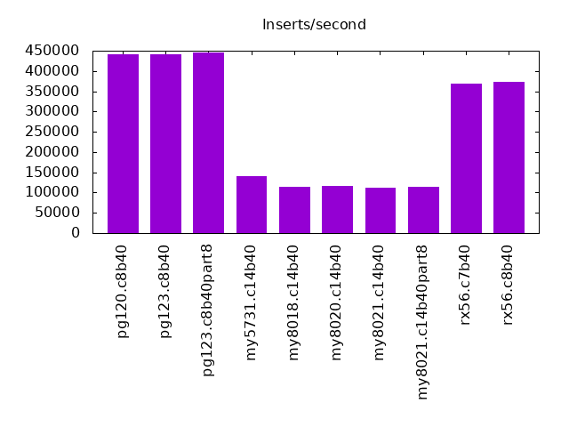
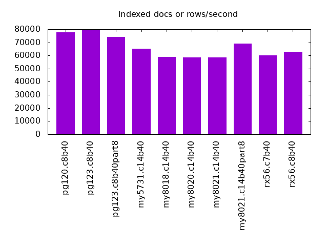
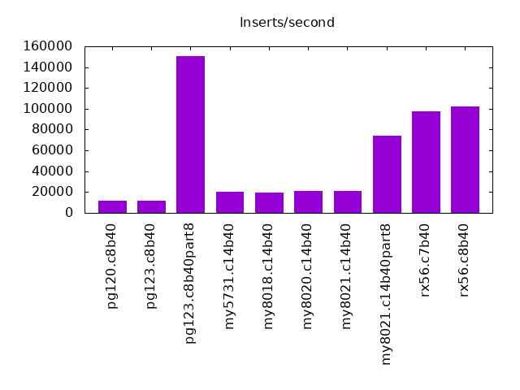
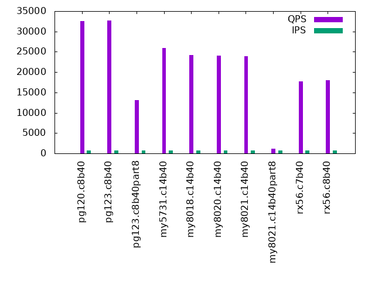
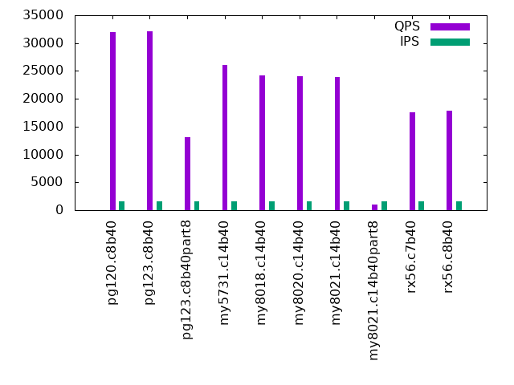
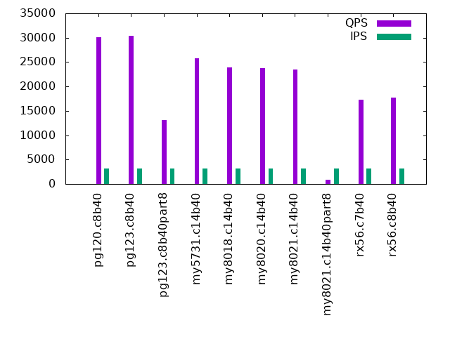
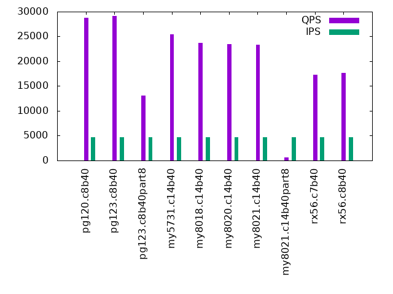
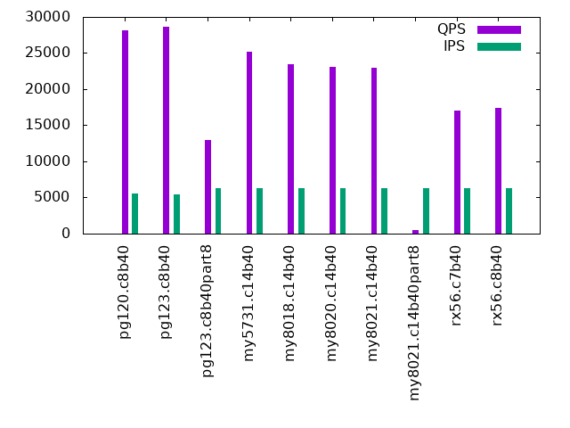
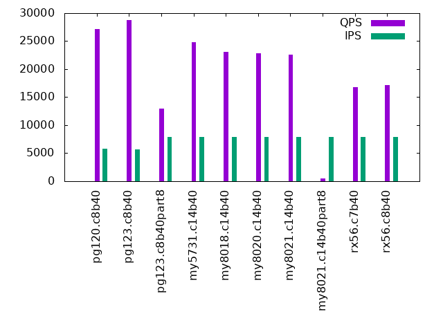

This is a report for the insert benchmark with 800M docs and 8 clients. It is generated by scripts (bash, awk, sed) and Tufte might not be impressed. An overview of the insert benchmark is here and a short update is here. Below, by DBMS, I mean DBMS+version.config. An example is my8020.c10b40 where my means MySQL, 8020 is version 8.0.20 and c10b40 is the name for the configuration file. All configurations are stored here.
The test server is a c3.8xlarge host with 20,000 EBS PIOPs, 60G RAM and 16 CPU cores (HT disabled). Clients and the DBMS share one server.
The tested DBMS are:
The numbers are inserts/s for l.i0 and l.i1, indexed docs (or rows) /s for l.x and queries/s for q*.2. The values are the average rate over the entire test for inserts (IPS) and queries (QPS). The range of values for IPS and QPS is split into 3 parts: bottom 25%, middle 50%, top 25%. Values in the bottom 25% have a red background, values in the top 25% have a green background and values in the middle have no color. A gray background is used for values that can be ignored because the DBMS did not sustain the target insert rate. Red backgrounds are not used when the minimum value is within 80% of the max value.
| dbms | l.i0 | l.x | l.i1 | q100.2 | q200.2 | q400.2 | q600.2 | q800.2 | q1000.2 |
|---|---|---|---|---|---|---|---|---|---|
| pg120.c8b40 | 441989 | 77695 | 11758 | 32582 | 31929 | 30130 | 28720 | 28131 | 27194 |
| pg123.c8b40 | 440529 | 79179 | 11587 | 32662 | 32128 | 30398 | 29102 | 28671 | 28712 |
| pg123.c8b40part8 | 444691 | 74200 | 150376 | 13121 | 13108 | 13095 | 13028 | 13012 | 12994 |
| my5731.c14b40 | 141568 | 65362 | 20502 | 25993 | 26071 | 25797 | 25452 | 25128 | 24788 |
| my8018.c14b40 | 115224 | 59022 | 19651 | 24262 | 24220 | 23954 | 23670 | 23414 | 23093 |
| my8020.c14b40 | 117028 | 58680 | 21036 | 24010 | 24054 | 23757 | 23444 | 23110 | 22855 |
| my8021.c14b40 | 111638 | 58615 | 20920 | 23881 | 23888 | 23537 | 23310 | 23009 | 22610 |
| my8021.c14b40part8 | 114646 | 68897 | 73869 | 1196 | 1064 | 851 | 645 | 538 | 477 |
| rx56.c7b40 | 369344 | 60248 | 97205 | 17661 | 17545 | 17318 | 17246 | 16996 | 16751 |
This lists the average rate of inserts/s for the tests that do inserts concurrent with queries. For such tests the query rate is listed in the table above. The read+write tests are setup so that the insert rate should match the target rate every second. Cells that are not at least 95% of the target have a red background to indicate a failure to satisfy the target.
| dbms | q100.2 | q200.2 | q400.2 | q600.2 | q800.2 | q1000.2 |
|---|---|---|---|---|---|---|
| pg120.c8b40 | 790 | 1579 | 3160 | 4724 | 5617 | 5809 |
| pg123.c8b40 | 789 | 1579 | 3160 | 4670 | 5436 | 5629 |
| pg123.c8b40part8 | 790 | 1580 | 3160 | 4739 | 6316 | 7899 |
| my5731.c14b40 | 790 | 1580 | 3160 | 4739 | 6319 | 7895 |
| my8018.c14b40 | 790 | 1580 | 3160 | 4739 | 6319 | 7895 |
| my8020.c14b40 | 789 | 1580 | 3160 | 4739 | 6319 | 7895 |
| my8021.c14b40 | 789 | 1580 | 3160 | 4742 | 6319 | 7895 |
| my8021.c14b40part8 | 790 | 1579 | 3160 | 4739 | 6319 | 7899 |
| rx56.c7b40 | 790 | 1580 | 3160 | 4739 | 6319 | 7899 |
| rx56.c8b40 | ||||||
| target | 800 | 1600 | 3200 | 4800 | 6400 | 8000 |
l.i0: load without secondary indexes. Graphs for performance per 1-second interval are here.
Average throughput:
Insert response time histogram: each cell has the percentage of responses that take <= the time in the header and max is the max response time in seconds. For the max column values in the top 25% of the range have a red background and in the bottom 25% of the range have a green background. The red background is not used when the min value is within 80% of the max value.
| dbms | 256us | 1ms | 4ms | 16ms | 64ms | 256ms | 1s | 4s | 16s | gt | max |
|---|---|---|---|---|---|---|---|---|---|---|---|
| pg120.c8b40 | 98.113 | 1.860 | 0.020 | 0.006 | 0.179 | ||||||
| pg123.c8b40 | 98.045 | 1.930 | 0.018 | 0.007 | 0.345 | ||||||
| pg123.c8b40part8 | 98.181 | 1.798 | 0.017 | 0.005 | 0.349 | ||||||
| my5731.c14b40 | 5.159 | 92.595 | 2.172 | 0.057 | 0.017 | 0.392 | |||||
| my8018.c14b40 | 1.347 | 96.426 | 2.168 | 0.037 | 0.021 | 4.066 | |||||
| my8020.c14b40 | 1.199 | 96.615 | 2.146 | 0.028 | 0.011 | 0.849 | |||||
| my8021.c14b40 | 0.706 | 97.111 | 2.144 | 0.020 | 0.018 | 0.395 | |||||
| my8021.c14b40part8 | 0.817 | 96.990 | 2.154 | 0.028 | 0.012 | 0.365 | |||||
| rx56.c7b40 | 98.750 | 1.220 | 0.001 | 0.017 | 0.012 | 0.368 |
Performance metrics for the DBMS listed above. Some are normalized by throughput, others are not. Legend for results is here.
ips qps rps rkbps wkbps rpq rkbpq wkbpi csps cpups cspq cpupq dbgb1 dbgb2 rss maxop p50 p99 tag 441989 0 28 226 199950 0.000 0.001 0.452 38175 81.5 0.086 30 86.1 126.1 0.0 0.179 57392 36754 pg120.c8b40 440529 0 26 214 199525 0.000 0.000 0.453 38458 81.0 0.087 29 86.1 126.1 0.0 0.345 57464 35958 pg123.c8b40 444691 0 0 2 200072 0.000 0.000 0.450 39182 81.3 0.088 29 86.1 126.1 0.0 0.349 57435 37752 pg123.c8b40part8 141568 0 0 1 72445 0.000 0.000 0.512 98313 40.7 0.694 46 83.9 117.5 43.4 0.392 18079 13086 my5731.c14b40 115224 0 0 1 59702 0.000 0.000 0.518 135787 43.7 1.178 61 83.5 117.1 43.6 4.066 14584 10688 my8018.c14b40 117028 0 0 1 60215 0.000 0.000 0.515 110820 44.7 0.947 61 83.4 117.0 43.6 0.849 14784 10988 my8020.c14b40 111638 0 0 1 57287 0.000 0.000 0.513 111366 44.5 0.998 64 83.0 116.5 43.5 0.395 14084 10394 my8021.c14b40 114646 0 0 1 58973 0.000 0.000 0.514 107459 45.2 0.937 63 83.2 116.8 43.5 0.365 14485 10888 my8021.c14b40part8 369344 0 0 0 82380 0.000 0.000 0.223 36939 75.8 0.100 33 38.9 41.0 2.3 0.368 48146 31280 rx56.c7b40
l.x: create secondary indexes.
Average throughput:
Performance metrics for the DBMS listed above. Some are normalized by throughput, others are not. Legend for results is here.
ips qps rps rkbps wkbps rpq rkbpq wkbpi csps cpups cspq cpupq dbgb1 dbgb2 rss maxop p50 p99 tag 77695 0 1017 16016 26231 0.013 0.206 0.338 1801 4.1 0.023 8 156.6 196.6 0.0 0.009 NA NA pg120.c8b40 79179 0 1038 16330 26738 0.013 0.206 0.338 1828 4.0 0.023 8 156.6 196.6 0.0 0.009 NA NA pg123.c8b40 74200 0 1417 18654 24560 0.019 0.251 0.331 2372 3.7 0.032 8 156.6 196.6 0.0 0.005 NA NA pg123.c8b40part8 65362 0 503 35926 59793 0.008 0.550 0.915 4959 3.0 0.076 7 149.0 182.5 43.9 0.019 NA NA my5731.c14b40 59022 0 510 39712 53988 0.009 0.673 0.915 3122 3.2 0.053 9 148.4 181.9 44.0 0.017 NA NA my8018.c14b40 58680 0 509 39678 53688 0.009 0.676 0.915 3435 3.2 0.059 9 148.3 181.8 44.0 0.018 NA NA my8020.c14b40 58615 0 504 39291 53604 0.009 0.670 0.915 3408 3.6 0.058 10 147.8 181.3 44.0 0.022 NA NA my8021.c14b40 68897 0 486 16485 51912 0.007 0.239 0.753 4415 3.5 0.064 8 148.0 181.6 43.9 0.019 NA NA my8021.c14b40part8 60248 0 564 12968 10565 0.009 0.215 0.175 1098 4.3 0.018 11 84.5 86.6 42.7 0.003 NA NA rx56.c7b40
l.i1: continue load after secondary indexes created. Graphs for performance per 1-second interval are here.
Average throughput:
Insert response time histogram: each cell has the percentage of responses that take <= the time in the header and max is the max response time in seconds. For the max column values in the top 25% of the range have a red background and in the bottom 25% of the range have a green background. The red background is not used when the min value is within 80% of the max value.
| dbms | 256us | 1ms | 4ms | 16ms | 64ms | 256ms | 1s | 4s | 16s | gt | max |
|---|---|---|---|---|---|---|---|---|---|---|---|
| pg120.c8b40 | 10.108 | 82.446 | 7.423 | 0.023 | 0.603 | ||||||
| pg123.c8b40 | 9.940 | 82.577 | 7.458 | 0.026 | 0.772 | ||||||
| pg123.c8b40part8 | 95.874 | 3.342 | 0.616 | 0.165 | 0.002 | 0.678 | |||||
| my5731.c14b40 | 1.309 | 82.307 | 11.988 | 2.798 | 1.593 | 0.004 | 2.304 | ||||
| my8018.c14b40 | 0.089 | 83.275 | 12.181 | 2.761 | 1.683 | 0.012 | 2.707 | ||||
| my8020.c14b40 | 0.012 | 85.555 | 10.165 | 2.707 | 1.559 | 0.003 | 1.849 | ||||
| my8021.c14b40 | 0.005 | 85.672 | 9.978 | 2.827 | 1.514 | 0.004 | 4.215 | ||||
| my8021.c14b40part8 | 14.494 | 82.719 | 2.582 | 0.197 | 0.008 | 0.861 | |||||
| rx56.c7b40 | 54.411 | 45.559 | 0.015 | 0.001 | 0.014 | 0.463 |
Performance metrics for the DBMS listed above. Some are normalized by throughput, others are not. Legend for results is here.
ips qps rps rkbps wkbps rpq rkbpq wkbpi csps cpups cspq cpupq dbgb1 dbgb2 rss maxop p50 p99 tag 11758 0 3196 26666 177142 0.272 2.268 15.066 11160 23.4 0.949 318 181.2 221.2 0.0 0.603 1398 499 pg120.c8b40 11587 0 3151 26276 174386 0.272 2.268 15.050 10993 22.9 0.949 316 181.2 221.3 0.0 0.772 1398 449 pg123.c8b40 150376 0 904 7566 152652 0.006 0.050 1.015 35073 57.0 0.233 61 176.2 216.3 0.0 0.678 23174 350 pg123.c8b40part8 20502 0 1853 29645 128746 0.090 1.446 6.280 27762 16.6 1.354 130 206.3 251.1 43.9 2.304 1299 100 my5731.c14b40 19651 0 1796 28739 123403 0.091 1.462 6.280 46358 17.8 2.359 145 205.4 250.1 44.0 2.707 1349 50 my8018.c14b40 21036 0 1918 30694 134056 0.091 1.459 6.373 47323 19.9 2.250 151 205.4 250.0 44.0 1.849 1648 100 my8020.c14b40 20920 0 1918 30685 134432 0.092 1.467 6.426 47274 20.1 2.260 154 204.9 249.4 44.0 4.215 1898 100 my8021.c14b40 73869 0 36 575 138560 0.000 0.008 1.876 63254 48.6 0.856 105 170.7 204.3 43.9 0.861 9939 250 my8021.c14b40part8 97205 0 0 0 98256 0.000 0.000 1.011 31354 42.9 0.323 71 93.9 94.3 42.0 0.463 12335 8241 rx56.c7b40
q100.2: range queries with 100 insert/s per client, 2nd loop. Graphs for performance per 1-second interval are here.
Average throughput:
Query response time histogram: each cell has the percentage of responses that take <= the time in the header and max is the max response time in seconds. For max values in the top 25% of the range have a red background and in the bottom 25% of the range have a green background. The red background is not used when the min value is within 80% of the max value.
| dbms | 256us | 1ms | 4ms | 16ms | 64ms | 256ms | 1s | 4s | 16s | gt | max |
|---|---|---|---|---|---|---|---|---|---|---|---|
| pg120.c8b40 | 97.523 | 2.388 | 0.087 | 0.001 | 0.019 | ||||||
| pg123.c8b40 | 97.512 | 2.389 | 0.097 | 0.002 | 0.018 | ||||||
| pg123.c8b40part8 | 99.937 | 0.060 | 0.002 | 0.025 | |||||||
| my5731.c14b40 | 17.561 | 82.413 | 0.025 | 0.001 | 0.132 | ||||||
| my8018.c14b40 | 0.029 | 99.940 | 0.029 | 0.001 | 0.145 | ||||||
| my8020.c14b40 | 0.024 | 99.944 | 0.031 | 0.001 | 0.083 | ||||||
| my8021.c14b40 | 0.024 | 99.943 | 0.032 | 0.001 | 0.480 | ||||||
| my8021.c14b40part8 | 68.748 | 7.286 | 9.868 | 13.259 | 0.811 | 0.027 | 0.001 | 1.337 | |||
| rx56.c7b40 | 99.986 | 0.013 | 0.038 |
Insert response time histogram: each cell has the percentage of responses that take <= the time in the header and max is the max response time in seconds. For max values in the top 25% of the range have a red background and in the bottom 25% of the range have a green background. The red background is not used when the min value is within 80% of the max value.
| dbms | 256us | 1ms | 4ms | 16ms | 64ms | 256ms | 1s | 4s | 16s | gt | max |
|---|---|---|---|---|---|---|---|---|---|---|---|
| pg120.c8b40 | 93.920 | 6.059 | 0.021 | 0.475 | |||||||
| pg123.c8b40 | 90.007 | 9.955 | 0.038 | 0.382 | |||||||
| pg123.c8b40part8 | 73.559 | 19.597 | 6.844 | 0.064 | |||||||
| my5731.c14b40 | 7.635 | 90.122 | 2.094 | 0.149 | 0.220 | ||||||
| my8018.c14b40 | 0.281 | 97.049 | 2.465 | 0.188 | 0.003 | 0.014 | 1.770 | ||||
| my8020.c14b40 | 0.128 | 97.281 | 2.510 | 0.080 | 0.208 | ||||||
| my8021.c14b40 | 0.010 | 97.118 | 2.726 | 0.142 | 0.003 | 0.490 | |||||
| my8021.c14b40part8 | 30.104 | 67.274 | 2.594 | 0.028 | 0.137 | ||||||
| rx56.c7b40 | 97.403 | 2.597 | 0.014 |
Performance metrics for the DBMS listed above. Some are normalized by throughput, others are not. Legend for results is here.
ips qps rps rkbps wkbps rpq rkbpq wkbpi csps cpups cspq cpupq dbgb1 dbgb2 rss maxop p50 p99 tag 790 32582 461 3829 11942 0.014 0.118 15.118 126529 39.2 3.883 192 184.4 224.5 0.0 0.019 4140 4043 pg120.c8b40 789 32662 462 3798 12586 0.014 0.116 15.944 126901 38.9 3.885 191 184.4 224.5 0.0 0.018 4155 3995 pg123.c8b40 790 13121 0 0 3891 0.000 0.000 4.926 51679 44.5 3.939 543 177.0 217.1 0.0 0.025 1662 1614 pg123.c8b40part8 790 25993 499 7986 28088 0.019 0.307 35.558 103575 48.1 3.985 296 206.7 251.5 43.6 0.132 3308 3164 my5731.c14b40 790 24262 505 8085 27858 0.021 0.333 35.267 98437 48.3 4.057 319 205.9 250.5 43.7 0.145 3100 2957 my8018.c14b40 789 24010 504 8070 28187 0.021 0.336 35.707 97968 48.3 4.080 322 205.8 250.4 44.1 0.083 3005 2957 my8020.c14b40 789 23881 505 8075 27880 0.021 0.338 35.318 97507 48.2 4.083 323 205.3 249.8 44.1 0.480 3021 2957 my8021.c14b40 790 1196 7464 119416 9722 6.239 99.829 12.307 21799 5.4 18.223 722 171.4 205.0 44.0 1.337 160 64 my8021.c14b40part8 790 17661 0 0 1143 0.000 0.000 1.448 72790 47.0 4.122 426 94.2 94.9 42.0 0.038 2237 2078 rx56.c7b40
q200.2: range queries with 200 insert/s per client, 2nd loop. Graphs for performance per 1-second interval are here.
Average throughput:
Query response time histogram: each cell has the percentage of responses that take <= the time in the header and max is the max response time in seconds. For max values in the top 25% of the range have a red background and in the bottom 25% of the range have a green background. The red background is not used when the min value is within 80% of the max value.
| dbms | 256us | 1ms | 4ms | 16ms | 64ms | 256ms | 1s | 4s | 16s | gt | max |
|---|---|---|---|---|---|---|---|---|---|---|---|
| pg120.c8b40 | 94.799 | 5.096 | 0.103 | 0.002 | 0.027 | ||||||
| pg123.c8b40 | 95.034 | 4.855 | 0.109 | 0.002 | 0.017 | ||||||
| pg123.c8b40part8 | 99.922 | 0.076 | 0.002 | 0.024 | |||||||
| my5731.c14b40 | 20.721 | 79.263 | 0.016 | 0.001 | 0.468 | ||||||
| my8018.c14b40 | 0.029 | 99.940 | 0.029 | 0.002 | 1.281 | ||||||
| my8020.c14b40 | 0.024 | 99.955 | 0.019 | 0.001 | 0.471 | ||||||
| my8021.c14b40 | 0.024 | 99.949 | 0.025 | 0.001 | 1.208 | ||||||
| my8021.c14b40part8 | 67.177 | 7.113 | 9.915 | 14.703 | 1.054 | 0.037 | 0.001 | 1.681 | |||
| rx56.c7b40 | 99.973 | 0.026 | 0.001 | 0.108 |
Insert response time histogram: each cell has the percentage of responses that take <= the time in the header and max is the max response time in seconds. For max values in the top 25% of the range have a red background and in the bottom 25% of the range have a green background. The red background is not used when the min value is within 80% of the max value.
| dbms | 256us | 1ms | 4ms | 16ms | 64ms | 256ms | 1s | 4s | 16s | gt | max |
|---|---|---|---|---|---|---|---|---|---|---|---|
| pg120.c8b40 | 91.073 | 8.924 | 0.003 | 0.273 | |||||||
| pg123.c8b40 | 82.781 | 17.184 | 0.035 | 0.357 | |||||||
| pg123.c8b40part8 | 84.965 | 11.434 | 3.601 | 0.057 | |||||||
| my5731.c14b40 | 41.399 | 56.661 | 1.849 | 0.085 | 0.005 | 0.503 | |||||
| my8018.c14b40 | 2.500 | 93.521 | 3.689 | 0.262 | 0.014 | 0.014 | 1.296 | ||||
| my8020.c14b40 | 4.769 | 92.821 | 2.328 | 0.068 | 0.014 | 0.568 | |||||
| my8021.c14b40 | 0.139 | 95.660 | 3.958 | 0.181 | 0.057 | 0.005 | 1.577 | ||||
| my8021.c14b40part8 | 17.993 | 79.696 | 2.252 | 0.059 | 0.203 | ||||||
| rx56.c7b40 | 92.922 | 7.035 | 0.033 | 0.010 | 0.106 |
Performance metrics for the DBMS listed above. Some are normalized by throughput, others are not. Legend for results is here.
ips qps rps rkbps wkbps rpq rkbpq wkbpi csps cpups cspq cpupq dbgb1 dbgb2 rss maxop p50 p99 tag 1579 31929 1095 9104 24999 0.034 0.285 15.833 124657 40.5 3.904 203 190.9 231.0 0.0 0.027 4107 3884 pg120.c8b40 1579 32128 1095 9109 25915 0.034 0.284 16.413 125273 40.8 3.899 203 191.0 231.0 0.0 0.017 4123 3868 pg123.c8b40 1580 13108 0 0 2907 0.000 0.000 1.840 51616 44.8 3.938 547 178.4 218.4 0.0 0.024 1662 1630 pg123.c8b40part8 1580 26071 507 8113 26396 0.019 0.311 16.708 103617 47.7 3.974 293 207.7 252.5 43.6 0.468 3325 3196 my5731.c14b40 1580 24220 511 8175 27111 0.021 0.338 17.161 98029 48.6 4.047 321 206.8 251.5 43.7 1.281 3100 2941 my8018.c14b40 1580 24054 511 8176 25972 0.021 0.340 16.440 97707 48.1 4.062 320 206.8 251.4 44.1 0.471 3069 2973 my8020.c14b40 1580 23888 511 8180 26183 0.021 0.342 16.574 97196 48.2 4.069 323 206.3 250.8 44.1 1.208 3037 2925 my8021.c14b40 1579 1064 7391 118258 9618 6.944 111.103 6.092 21503 5.5 20.202 827 172.8 206.4 43.7 1.681 128 32 my8021.c14b40part8 1580 17545 0 0 2307 0.000 0.000 1.460 72390 47.2 4.126 430 94.8 96.2 42.1 0.108 2221 2046 rx56.c7b40
q400.2: range queries with 400 insert/s per client, 2nd loop. Graphs for performance per 1-second interval are here.
Average throughput:
Query response time histogram: each cell has the percentage of responses that take <= the time in the header and max is the max response time in seconds. For max values in the top 25% of the range have a red background and in the bottom 25% of the range have a green background. The red background is not used when the min value is within 80% of the max value.
| dbms | 256us | 1ms | 4ms | 16ms | 64ms | 256ms | 1s | 4s | 16s | gt | max |
|---|---|---|---|---|---|---|---|---|---|---|---|
| pg120.c8b40 | 87.166 | 12.611 | 0.218 | 0.005 | 0.024 | ||||||
| pg123.c8b40 | 88.070 | 11.716 | 0.209 | 0.005 | 0.017 | ||||||
| pg123.c8b40part8 | 99.841 | 0.151 | 0.008 | 0.030 | |||||||
| my5731.c14b40 | 17.426 | 82.527 | 0.041 | 0.005 | 0.001 | 0.262 | |||||
| my8018.c14b40 | 0.029 | 99.888 | 0.073 | 0.009 | 0.001 | 0.206 | |||||
| my8020.c14b40 | 0.024 | 99.917 | 0.051 | 0.008 | 0.001 | 2.375 | |||||
| my8021.c14b40 | 0.023 | 99.902 | 0.066 | 0.009 | 0.001 | 0.890 | |||||
| my8021.c14b40part8 | 64.035 | 6.595 | 10.023 | 17.442 | 1.853 | 0.050 | 0.002 | 2.006 | |||
| rx56.c7b40 | 99.928 | 0.064 | 0.007 | 0.127 |
Insert response time histogram: each cell has the percentage of responses that take <= the time in the header and max is the max response time in seconds. For max values in the top 25% of the range have a red background and in the bottom 25% of the range have a green background. The red background is not used when the min value is within 80% of the max value.
| dbms | 256us | 1ms | 4ms | 16ms | 64ms | 256ms | 1s | 4s | 16s | gt | max |
|---|---|---|---|---|---|---|---|---|---|---|---|
| pg120.c8b40 | 61.786 | 38.201 | 0.013 | 0.423 | |||||||
| pg123.c8b40 | 55.780 | 44.122 | 0.098 | 0.601 | |||||||
| pg123.c8b40part8 | 89.457 | 8.220 | 2.322 | 0.001 | 0.064 | ||||||
| my5731.c14b40 | 28.732 | 68.296 | 2.880 | 0.091 | 0.001 | 0.353 | |||||
| my8018.c14b40 | 0.736 | 91.518 | 7.539 | 0.199 | 0.008 | 0.287 | |||||
| my8020.c14b40 | 1.504 | 94.447 | 3.847 | 0.177 | 0.019 | 0.005 | 2.819 | ||||
| my8021.c14b40 | 0.041 | 94.057 | 5.670 | 0.174 | 0.056 | 0.003 | 1.016 | ||||
| my8021.c14b40part8 | 7.613 | 89.618 | 2.766 | 0.003 | 0.071 | ||||||
| rx56.c7b40 | 90.415 | 9.515 | 0.062 | 0.009 | 0.174 |
Performance metrics for the DBMS listed above. Some are normalized by throughput, others are not. Legend for results is here.
ips qps rps rkbps wkbps rpq rkbpq wkbpi csps cpups cspq cpupq dbgb1 dbgb2 rss maxop p50 p99 tag 3160 30130 2836 23440 57602 0.094 0.778 18.231 119239 46.0 3.957 244 203.5 243.5 0.0 0.024 3726 3262 pg120.c8b40 3160 30398 2852 23535 57890 0.094 0.774 18.322 120049 46.0 3.949 242 203.5 243.5 0.0 0.017 3979 3261 pg123.c8b40 3160 13095 0 0 4569 0.000 0.000 1.446 51636 45.5 3.943 556 181.1 220.1 0.0 0.030 1662 1614 pg123.c8b40part8 3160 25797 524 8389 34872 0.020 0.325 11.037 102641 49.0 3.979 304 209.8 254.6 43.5 0.262 3308 3116 my5731.c14b40 3160 23954 534 8545 34019 0.022 0.357 10.767 97618 49.5 4.075 331 208.9 253.5 43.7 0.206 2990 2893 my8018.c14b40 3160 23757 526 8421 34416 0.022 0.354 10.892 97372 49.2 4.099 331 208.9 253.4 43.7 2.375 3037 2878 my8020.c14b40 3160 23537 527 8438 34922 0.022 0.359 11.053 96578 49.7 4.103 338 208.4 252.9 43.7 0.890 2989 2861 my8021.c14b40 3160 851 7077 113228 10130 8.312 132.990 3.206 21111 5.7 24.796 1071 176.0 209.5 43.7 2.006 112 32 my8021.c14b40part8 3160 17318 1 17 4876 0.000 0.001 1.543 71553 48.3 4.132 446 96.1 99.0 42.1 0.127 2189 1998 rx56.c7b40
q600.2: range queries with 600 insert/s per client, 2nd loop. Graphs for performance per 1-second interval are here.
Average throughput:
Query response time histogram: each cell has the percentage of responses that take <= the time in the header and max is the max response time in seconds. For max values in the top 25% of the range have a red background and in the bottom 25% of the range have a green background. The red background is not used when the min value is within 80% of the max value.
| dbms | 256us | 1ms | 4ms | 16ms | 64ms | 256ms | 1s | 4s | 16s | gt | max |
|---|---|---|---|---|---|---|---|---|---|---|---|
| pg120.c8b40 | 79.809 | 19.949 | 0.236 | 0.005 | 0.023 | ||||||
| pg123.c8b40 | 82.074 | 17.681 | 0.239 | 0.006 | 0.037 | ||||||
| pg123.c8b40part8 | 99.733 | 0.254 | 0.013 | 0.026 | |||||||
| my5731.c14b40 | 15.758 | 84.141 | 0.092 | 0.007 | 0.001 | 0.866 | |||||
| my8018.c14b40 | 0.042 | 99.820 | 0.126 | 0.009 | 0.001 | 1.077 | |||||
| my8020.c14b40 | 0.023 | 99.838 | 0.127 | 0.010 | 0.001 | 0.494 | |||||
| my8021.c14b40 | 0.022 | 99.836 | 0.129 | 0.011 | 0.001 | 0.810 | |||||
| my8021.c14b40part8 | 60.364 | 5.853 | 9.580 | 20.634 | 3.461 | 0.103 | 0.005 | 2.313 | |||
| rx56.c7b40 | 99.839 | 0.148 | 0.012 | 0.115 |
Insert response time histogram: each cell has the percentage of responses that take <= the time in the header and max is the max response time in seconds. For max values in the top 25% of the range have a red background and in the bottom 25% of the range have a green background. The red background is not used when the min value is within 80% of the max value.
| dbms | 256us | 1ms | 4ms | 16ms | 64ms | 256ms | 1s | 4s | 16s | gt | max |
|---|---|---|---|---|---|---|---|---|---|---|---|
| pg120.c8b40 | 48.714 | 51.222 | 0.064 | 0.704 | |||||||
| pg123.c8b40 | 35.997 | 63.851 | 0.152 | 0.708 | |||||||
| pg123.c8b40part8 | 89.651 | 8.363 | 1.981 | 0.005 | 0.203 | ||||||
| my5731.c14b40 | 4.307 | 91.213 | 4.279 | 0.175 | 0.026 | 0.995 | |||||
| my8018.c14b40 | 0.097 | 93.356 | 6.236 | 0.293 | 0.016 | 0.002 | 1.102 | ||||
| my8020.c14b40 | 0.027 | 92.582 | 7.230 | 0.153 | 0.009 | 0.556 | |||||
| my8021.c14b40 | 0.003 | 91.594 | 8.182 | 0.203 | 0.017 | 0.866 | |||||
| my8021.c14b40part8 | 12.904 | 83.718 | 3.219 | 0.150 | 0.009 | 0.321 | |||||
| rx56.c7b40 | 61.635 | 37.985 | 0.365 | 0.015 | 0.192 |
Performance metrics for the DBMS listed above. Some are normalized by throughput, others are not. Legend for results is here.
ips qps rps rkbps wkbps rpq rkbpq wkbpi csps cpups cspq cpupq dbgb1 dbgb2 rss maxop p50 p99 tag 4724 28720 4890 40051 79465 0.170 1.395 16.822 116458 49.9 4.055 278 215.0 255.0 0.0 0.023 3420 3036 pg120.c8b40 4670 29102 4826 39465 76744 0.166 1.356 16.433 117305 49.5 4.031 272 215.0 255.1 0.0 0.037 3516 3068 pg123.c8b40 4739 13028 0 1 6447 0.000 0.000 1.360 51500 46.2 3.953 567 185.4 221.7 0.0 0.026 1646 1566 pg123.c8b40part8 4739 25452 535 8564 42966 0.021 0.336 9.066 101459 50.4 3.986 317 212.8 257.6 43.5 0.866 3196 3054 my5731.c14b40 4739 23670 537 8590 41920 0.023 0.363 8.845 96880 50.8 4.093 343 211.9 256.5 43.7 1.077 3037 2845 my8018.c14b40 4739 23444 542 8668 41789 0.023 0.370 8.817 96681 50.8 4.124 347 211.8 256.4 43.7 0.494 2973 2829 my8020.c14b40 4742 23310 544 8710 41387 0.023 0.374 8.728 96166 50.5 4.125 347 211.3 255.8 43.7 0.810 2973 2813 my8021.c14b40 4739 645 6879 110062 13304 10.667 170.665 2.807 21214 5.8 32.895 1439 181.2 214.7 43.7 2.313 80 16 my8021.c14b40part8 4739 17246 7 80 6330 0.000 0.005 1.336 71392 48.8 4.140 453 98.1 99.3 42.2 0.115 2176 1983 rx56.c7b40
q800.2: range queries with 800 insert/s per client, 2nd loop. Graphs for performance per 1-second interval are here.
Average throughput:
Query response time histogram: each cell has the percentage of responses that take <= the time in the header and max is the max response time in seconds. For max values in the top 25% of the range have a red background and in the bottom 25% of the range have a green background. The red background is not used when the min value is within 80% of the max value.
| dbms | 256us | 1ms | 4ms | 16ms | 64ms | 256ms | 1s | 4s | 16s | gt | max |
|---|---|---|---|---|---|---|---|---|---|---|---|
| pg120.c8b40 | 76.843 | 22.858 | 0.294 | 0.005 | 0.023 | ||||||
| pg123.c8b40 | 79.814 | 19.908 | 0.273 | 0.005 | 0.027 | ||||||
| pg123.c8b40part8 | 99.662 | 0.321 | 0.017 | 0.028 | |||||||
| my5731.c14b40 | 12.205 | 87.632 | 0.154 | 0.009 | 0.001 | 0.292 | |||||
| my8018.c14b40 | 0.039 | 99.751 | 0.197 | 0.012 | 0.001 | 0.585 | |||||
| my8020.c14b40 | 0.021 | 99.780 | 0.187 | 0.010 | 0.001 | 0.516 | |||||
| my8021.c14b40 | 0.022 | 99.777 | 0.189 | 0.011 | 0.001 | 0.826 | |||||
| my8021.c14b40part8 | 57.891 | 4.959 | 9.096 | 22.810 | 5.114 | 0.125 | 0.005 | 2.889 | |||
| rx56.c7b40 | 99.703 | 0.278 | 0.019 | 0.001 | 0.151 |
Insert response time histogram: each cell has the percentage of responses that take <= the time in the header and max is the max response time in seconds. For max values in the top 25% of the range have a red background and in the bottom 25% of the range have a green background. The red background is not used when the min value is within 80% of the max value.
| dbms | 256us | 1ms | 4ms | 16ms | 64ms | 256ms | 1s | 4s | 16s | gt | max |
|---|---|---|---|---|---|---|---|---|---|---|---|
| pg120.c8b40 | 42.316 | 57.573 | 0.110 | 1.091 | |||||||
| pg123.c8b40 | 38.121 | 61.744 | 0.135 | 0.766 | |||||||
| pg123.c8b40part8 | 87.430 | 10.784 | 1.785 | 0.001 | 0.066 | ||||||
| my5731.c14b40 | 0.608 | 94.420 | 4.792 | 0.178 | 0.002 | 0.458 | |||||
| my8018.c14b40 | 0.011 | 92.370 | 7.424 | 0.189 | 0.005 | 0.630 | |||||
| my8020.c14b40 | 0.004 | 92.546 | 7.358 | 0.082 | 0.009 | 0.548 | |||||
| my8021.c14b40 | 93.234 | 6.688 | 0.076 | 0.002 | 1.066 | ||||||
| my8021.c14b40part8 | 7.423 | 89.838 | 2.658 | 0.078 | 0.003 | 0.276 | |||||
| rx56.c7b40 | 42.386 | 57.446 | 0.168 | 0.040 |
Performance metrics for the DBMS listed above. Some are normalized by throughput, others are not. Legend for results is here.
ips qps rps rkbps wkbps rpq rkbpq wkbpi csps cpups cspq cpupq dbgb1 dbgb2 rss maxop p50 p99 tag 5617 28131 5963 48513 82977 0.212 1.725 14.773 115460 50.9 4.104 289 221.5 261.6 0.0 0.023 3851 3052 pg120.c8b40 5436 28671 5732 46553 78955 0.200 1.624 14.523 116919 50.0 4.078 279 221.6 261.6 0.0 0.027 3484 3005 pg123.c8b40 6316 13012 0 0 8487 0.000 0.000 1.344 51354 46.9 3.947 577 190.9 225.3 0.0 0.028 1646 1566 pg123.c8b40part8 6319 25128 542 8673 49479 0.022 0.345 7.830 100062 51.9 3.982 330 216.1 260.9 43.6 0.292 3180 2989 my5731.c14b40 6319 23414 546 8732 48751 0.023 0.373 7.715 96135 52.2 4.106 357 215.1 259.7 43.7 0.585 2925 2783 my8018.c14b40 6319 23110 547 8746 48751 0.024 0.378 7.715 95699 52.3 4.141 362 215.1 259.6 43.7 0.516 2910 2780 my8020.c14b40 6319 23009 539 8630 49273 0.023 0.375 7.797 95196 52.3 4.137 364 214.5 259.0 43.7 0.826 2911 2749 my8021.c14b40 6319 538 6854 109668 16820 12.733 203.731 2.662 22100 6.6 41.055 1962 186.9 220.5 43.7 2.889 64 16 my8021.c14b40part8 6319 16996 121 739 9488 0.007 0.044 1.501 70685 49.8 4.159 469 100.8 100.9 42.1 0.151 2158 1966 rx56.c7b40
q1000.2: range queries with 1000 insert/s per client, 2nd loop. Graphs for performance per 1-second interval are here.
Average throughput:
Query response time histogram: each cell has the percentage of responses that take <= the time in the header and max is the max response time in seconds. For max values in the top 25% of the range have a red background and in the bottom 25% of the range have a green background. The red background is not used when the min value is within 80% of the max value.
| dbms | 256us | 1ms | 4ms | 16ms | 64ms | 256ms | 1s | 4s | 16s | gt | max |
|---|---|---|---|---|---|---|---|---|---|---|---|
| pg120.c8b40 | 65.621 | 34.058 | 0.316 | 0.005 | 0.024 | ||||||
| pg123.c8b40 | 79.581 | 20.139 | 0.276 | 0.004 | 0.030 | ||||||
| pg123.c8b40part8 | 99.540 | 0.437 | 0.022 | 0.001 | 0.030 | ||||||
| my5731.c14b40 | 9.651 | 90.193 | 0.145 | 0.009 | 0.002 | 0.761 | |||||
| my8018.c14b40 | 0.044 | 99.672 | 0.267 | 0.014 | 0.002 | 0.728 | |||||
| my8020.c14b40 | 0.021 | 99.775 | 0.188 | 0.014 | 0.002 | 0.854 | |||||
| my8021.c14b40 | 0.020 | 99.746 | 0.218 | 0.014 | 0.002 | 0.695 | |||||
| my8021.c14b40part8 | 54.419 | 4.437 | 9.035 | 25.999 | 6.014 | 0.092 | 0.004 | 2.524 | |||
| rx56.c7b40 | 99.570 | 0.410 | 0.020 | 0.169 |
Insert response time histogram: each cell has the percentage of responses that take <= the time in the header and max is the max response time in seconds. For max values in the top 25% of the range have a red background and in the bottom 25% of the range have a green background. The red background is not used when the min value is within 80% of the max value.
| dbms | 256us | 1ms | 4ms | 16ms | 64ms | 256ms | 1s | 4s | 16s | gt | max |
|---|---|---|---|---|---|---|---|---|---|---|---|
| pg120.c8b40 | 45.441 | 54.533 | 0.026 | 0.768 | |||||||
| pg123.c8b40 | 41.409 | 58.533 | 0.059 | 0.776 | |||||||
| pg123.c8b40part8 | 81.771 | 16.418 | 1.810 | 0.001 | 0.073 | ||||||
| my5731.c14b40 | 0.409 | 96.302 | 2.983 | 0.285 | 0.020 | 0.001 | 1.450 | ||||
| my8018.c14b40 | 90.941 | 8.744 | 0.306 | 0.006 | 0.002 | 1.231 | |||||
| my8020.c14b40 | 0.001 | 95.443 | 4.364 | 0.180 | 0.013 | 0.001 | 1.099 | ||||
| my8021.c14b40 | 93.862 | 5.863 | 0.240 | 0.035 | 0.740 | ||||||
| my8021.c14b40part8 | 8.644 | 88.450 | 2.771 | 0.135 | 0.228 | ||||||
| rx56.c7b40 | 41.165 | 58.267 | 0.565 | 0.003 | 0.079 |
Performance metrics for the DBMS listed above. Some are normalized by throughput, others are not. Legend for results is here.
ips qps rps rkbps wkbps rpq rkbpq wkbpi csps cpups cspq cpupq dbgb1 dbgb2 rss maxop p50 p99 tag 5809 27194 6090 48735 82058 0.224 1.792 14.127 111249 53.8 4.091 317 226.8 266.8 0.0 0.024 3387 2700 pg120.c8b40 5629 28712 5980 46174 78679 0.208 1.608 13.977 117313 50.4 4.086 281 226.8 266.9 0.0 0.030 3340 3005 pg123.c8b40 7899 12994 0 0 11136 0.000 0.000 1.410 51089 47.7 3.932 587 197.8 231.3 0.0 0.030 1646 1486 pg123.c8b40part8 7895 24788 583 9325 58203 0.024 0.376 7.372 98698 53.5 3.982 345 221.0 265.8 43.5 0.761 3100 2877 my5731.c14b40 7895 23093 594 9499 57358 0.026 0.411 7.265 95671 53.8 4.143 373 220.1 264.7 43.7 0.728 2893 2717 my8018.c14b40 7895 22855 586 9379 57775 0.026 0.410 7.318 95410 54.0 4.175 378 220.1 264.7 43.7 0.854 2861 2702 my8020.c14b40 7895 22610 586 9373 58757 0.026 0.415 7.443 95085 54.2 4.205 384 219.4 263.9 43.7 0.695 2829 2559 my8021.c14b40 7899 477 7336 117381 25480 15.367 245.875 3.226 24682 7.5 51.701 2514 193.6 227.1 43.7 2.524 64 16 my8021.c14b40part8 7899 16751 290 2867 13806 0.017 0.171 1.748 70004 51.1 4.179 488 103.9 107.7 42.7 0.169 2142 1934 rx56.c7b40
l.i0: load without secondary indexes
Performance metrics for all DBMS, not just the ones listed above. Some are normalized by throughput, others are not. Legend for results is here.
ips qps rps rkbps wkbps rpq rkbpq wkbpi csps cpups cspq cpupq dbgb1 dbgb2 rss maxop p50 p99 tag 440529 0 26 214 199525 0.000 0.000 0.453 38458 81.0 0.087 29 86.1 126.1 0.0 0.345 57464 35958 pg123.c8b40 111638 0 0 1 57287 0.000 0.000 0.513 111366 44.5 0.998 64 83.0 116.5 43.5 0.395 14084 10394 my8021.c14b40 369344 0 0 0 82380 0.000 0.000 0.223 36939 75.8 0.100 33 38.9 41.0 2.3 0.368 48146 31280 rx56.c7b40 - 441989 0 28 226 199950 0.000 0.001 0.452 38175 81.5 0.086 30 86.1 126.1 0.0 0.179 57392 36754 pg120.c8b40 440529 0 26 214 199525 0.000 0.000 0.453 38458 81.0 0.087 29 86.1 126.1 0.0 0.345 57464 35958 pg123.c8b40 - 141568 0 0 1 72445 0.000 0.000 0.512 98313 40.7 0.694 46 83.9 117.5 43.4 0.392 18079 13086 my5731.c14b40 115224 0 0 1 59702 0.000 0.000 0.518 135787 43.7 1.178 61 83.5 117.1 43.6 4.066 14584 10688 my8018.c14b40 117028 0 0 1 60215 0.000 0.000 0.515 110820 44.7 0.947 61 83.4 117.0 43.6 0.849 14784 10988 my8020.c14b40 111638 0 0 1 57287 0.000 0.000 0.513 111366 44.5 0.998 64 83.0 116.5 43.5 0.395 14084 10394 my8021.c14b40 - 154619 0 0 1 79882 0.000 0.000 0.517 78772 43.2 0.509 45 87.2 120.7 46.0 0.384 19677 14084 my5731.c15b40 130336 0 0 1 68035 0.000 0.000 0.522 111942 46.5 0.859 57 85.9 119.4 46.1 0.627 16580 12286 my8018.c15b40 130612 0 0 1 67583 0.000 0.000 0.517 87317 47.2 0.669 58 85.6 119.2 46.1 0.374 16581 11989 my8020.c15b40 127632 0 0 1 66023 0.000 0.000 0.517 87366 47.4 0.685 59 85.3 118.8 46.1 0.393 16182 11987 my8021.c15b40 - 369344 0 0 0 82380 0.000 0.000 0.223 36939 75.8 0.100 33 38.9 41.0 2.3 0.368 48146 31280 rx56.c7b40 - 444691 0 0 2 200072 0.000 0.000 0.450 39182 81.3 0.088 29 86.1 126.1 0.0 0.349 57435 37752 pg123.c8b40part8 - 142501 0 0 1 72691 0.000 0.000 0.510 96046 41.1 0.674 46 83.8 117.4 43.4 0.467 18080 13185 my5731.c14b40part8 114139 0 0 1 58945 0.000 0.000 0.516 135053 43.9 1.183 62 83.3 116.8 43.6 0.355 14397 10788 my8018.c14b40part8 115875 0 0 1 59568 0.000 0.000 0.514 109372 45.1 0.944 62 83.3 116.9 43.6 0.411 14683 10892 my8020.c14b40part8 114646 0 0 1 58973 0.000 0.000 0.514 107459 45.2 0.937 63 83.2 116.8 43.5 0.365 14485 10888 my8021.c14b40part8 - 153610 0 0 0 78996 0.000 0.000 0.514 76312 43.6 0.497 45 87.0 120.6 46.0 0.512 19578 14084 my5731.c15b40part8 128638 0 0 1 66681 0.000 0.000 0.518 109827 47.2 0.854 59 85.4 119.0 46.1 0.357 16282 12087 my8018.c15b40part8 130124 0 0 1 66989 0.000 0.000 0.515 85220 47.9 0.655 59 85.3 118.9 46.1 0.363 16482 12186 my8020.c15b40part8 126702 0 0 1 65178 0.000 0.000 0.514 84737 47.9 0.669 60 85.1 118.6 46.1 0.388 16082 11986 my8021.c15b40part8
l.x: create secondary indexes
Performance metrics for all DBMS, not just the ones listed above. Some are normalized by throughput, others are not. Legend for results is here.
ips qps rps rkbps wkbps rpq rkbpq wkbpi csps cpups cspq cpupq dbgb1 dbgb2 rss maxop p50 p99 tag 79179 0 1038 16330 26738 0.013 0.206 0.338 1828 4.0 0.023 8 156.6 196.6 0.0 0.009 NA NA pg123.c8b40 58615 0 504 39291 53604 0.009 0.670 0.915 3408 3.6 0.058 10 147.8 181.3 44.0 0.022 NA NA my8021.c14b40 60248 0 564 12968 10565 0.009 0.215 0.175 1098 4.3 0.018 11 84.5 86.6 42.7 0.003 NA NA rx56.c7b40 - 77695 0 1017 16016 26231 0.013 0.206 0.338 1801 4.1 0.023 8 156.6 196.6 0.0 0.009 NA NA pg120.c8b40 79179 0 1038 16330 26738 0.013 0.206 0.338 1828 4.0 0.023 8 156.6 196.6 0.0 0.009 NA NA pg123.c8b40 - 65362 0 503 35926 59793 0.008 0.550 0.915 4959 3.0 0.076 7 149.0 182.5 43.9 0.019 NA NA my5731.c14b40 59022 0 510 39712 53988 0.009 0.673 0.915 3122 3.2 0.053 9 148.4 181.9 44.0 0.017 NA NA my8018.c14b40 58680 0 509 39678 53688 0.009 0.676 0.915 3435 3.2 0.059 9 148.3 181.8 44.0 0.018 NA NA my8020.c14b40 58615 0 504 39291 53604 0.009 0.670 0.915 3408 3.6 0.058 10 147.8 181.3 44.0 0.022 NA NA my8021.c14b40 - 47329 0 612 32733 43627 0.013 0.692 0.922 4426 2.3 0.094 8 153.7 187.2 46.5 0.017 NA NA my5731.c15b40 47410 0 615 33045 43639 0.013 0.697 0.920 3281 2.5 0.069 8 151.4 184.9 46.7 0.017 NA NA my8018.c15b40 46431 0 600 32200 42758 0.013 0.694 0.921 3359 2.9 0.072 10 151.1 184.6 46.7 0.016 NA NA my8020.c15b40 49116 0 634 34338 45175 0.013 0.699 0.920 3503 2.7 0.071 9 150.7 184.3 46.7 0.023 NA NA my8021.c15b40 - 60248 0 564 12968 10565 0.009 0.215 0.175 1098 4.3 0.018 11 84.5 86.6 42.7 0.003 NA NA rx56.c7b40 - 74200 0 1417 18654 24560 0.019 0.251 0.331 2372 3.7 0.032 8 156.6 196.6 0.0 0.005 NA NA pg123.c8b40part8 - 71559 0 506 17185 54032 0.007 0.240 0.755 7588 2.7 0.106 6 148.9 182.4 43.8 0.018 NA NA my5731.c14b40part8 76222 0 451 7221 57506 0.006 0.095 0.754 5015 3.4 0.066 7 148.1 181.6 44.0 0.018 NA NA my8018.c14b40part8 68566 0 487 16857 51699 0.007 0.246 0.754 4329 3.4 0.063 8 148.1 181.7 44.0 0.016 NA NA my8020.c14b40part8 68897 0 486 16485 51912 0.007 0.239 0.753 4415 3.5 0.064 8 148.0 181.6 43.9 0.019 NA NA my8021.c14b40part8 - 49860 0 690 15812 37996 0.014 0.317 0.762 6186 1.9 0.124 6 153.5 187.0 46.3 0.030 NA NA my5731.c15b40part8 49588 0 692 16785 37743 0.014 0.338 0.761 4017 2.3 0.081 7 150.9 184.4 46.6 0.016 NA NA my8018.c15b40part8 51827 0 719 16980 39447 0.014 0.328 0.761 4057 2.3 0.078 7 150.8 184.3 46.5 0.016 NA NA my8020.c15b40part8 49447 0 687 16587 37615 0.014 0.335 0.761 3880 2.4 0.078 8 150.6 184.1 46.5 0.018 NA NA my8021.c15b40part8
l.i1: continue load after secondary indexes created
Performance metrics for all DBMS, not just the ones listed above. Some are normalized by throughput, others are not. Legend for results is here.
ips qps rps rkbps wkbps rpq rkbpq wkbpi csps cpups cspq cpupq dbgb1 dbgb2 rss maxop p50 p99 tag 11587 0 3151 26276 174386 0.272 2.268 15.050 10993 22.9 0.949 316 181.2 221.3 0.0 0.772 1398 449 pg123.c8b40 20920 0 1918 30685 134432 0.092 1.467 6.426 47274 20.1 2.260 154 204.9 249.4 44.0 4.215 1898 100 my8021.c14b40 97205 0 0 0 98256 0.000 0.000 1.011 31354 42.9 0.323 71 93.9 94.3 42.0 0.463 12335 8241 rx56.c7b40 - 11758 0 3196 26666 177142 0.272 2.268 15.066 11160 23.4 0.949 318 181.2 221.2 0.0 0.603 1398 499 pg120.c8b40 11587 0 3151 26276 174386 0.272 2.268 15.050 10993 22.9 0.949 316 181.2 221.3 0.0 0.772 1398 449 pg123.c8b40 - 20502 0 1853 29645 128746 0.090 1.446 6.280 27762 16.6 1.354 130 206.3 251.1 43.9 2.304 1299 100 my5731.c14b40 19651 0 1796 28739 123403 0.091 1.462 6.280 46358 17.8 2.359 145 205.4 250.1 44.0 2.707 1349 50 my8018.c14b40 21036 0 1918 30694 134056 0.091 1.459 6.373 47323 19.9 2.250 151 205.4 250.0 44.0 1.849 1648 100 my8020.c14b40 20920 0 1918 30685 134432 0.092 1.467 6.426 47274 20.1 2.260 154 204.9 249.4 44.0 4.215 1898 100 my8021.c14b40 - 14967 0 2459 19675 86294 0.164 1.315 5.766 32660 11.6 2.182 124 209.9 255.6 46.5 7.824 449 0 my5731.c15b40 14856 0 2441 19528 84501 0.164 1.315 5.688 50753 13.2 3.416 142 206.6 252.2 46.7 3.214 499 100 my8018.c15b40 15558 0 2508 20066 89469 0.161 1.290 5.751 52943 13.9 3.403 143 206.3 252.0 46.7 3.223 450 50 my8020.c15b40 16270 0 2630 21036 94364 0.162 1.293 5.800 54591 15.2 3.355 149 206.0 251.6 46.7 5.236 549 100 my8021.c15b40 - 97205 0 0 0 98256 0.000 0.000 1.011 31354 42.9 0.323 71 93.9 94.3 42.0 0.463 12335 8241 rx56.c7b40 - 150376 0 904 7566 152652 0.006 0.050 1.015 35073 57.0 0.233 61 176.2 216.3 0.0 0.678 23174 350 pg123.c8b40part8 - 87816 0 0 5 122620 0.000 0.000 1.396 44844 42.1 0.511 77 171.6 205.1 43.8 0.429 11886 449 my5731.c14b40part8 74557 0 1 9 110702 0.000 0.000 1.485 86180 47.5 1.156 102 170.8 204.4 44.0 0.392 9939 400 my8018.c14b40part8 74766 0 36 583 138265 0.000 0.008 1.849 63653 48.0 0.851 103 170.8 204.4 44.0 0.735 10139 250 my8020.c14b40part8 73869 0 36 575 138560 0.000 0.008 1.876 63254 48.6 0.856 105 170.7 204.3 43.9 0.861 9939 250 my8021.c14b40part8 - 88398 0 0 3 97711 0.000 0.000 1.105 47317 43.4 0.535 79 174.1 207.6 46.3 0.410 11837 799 my5731.c15b40part8 76775 0 1 4 86637 0.000 0.000 1.128 87623 49.2 1.141 103 171.1 204.7 46.6 0.351 10297 649 my8018.c15b40part8 74836 0 102 819 108213 0.001 0.011 1.446 65513 48.5 0.875 104 171.0 204.5 46.5 1.274 10338 250 my8020.c15b40part8 72860 0 110 877 107060 0.002 0.012 1.469 64937 48.9 0.891 107 170.7 204.3 46.5 0.707 10039 200 my8021.c15b40part8
q100.2: range queries with 100 insert/s per client, 2nd loop
Performance metrics for all DBMS, not just the ones listed above. Some are normalized by throughput, others are not. Legend for results is here.
ips qps rps rkbps wkbps rpq rkbpq wkbpi csps cpups cspq cpupq dbgb1 dbgb2 rss maxop p50 p99 tag 789 32662 462 3798 12586 0.014 0.116 15.944 126901 38.9 3.885 191 184.4 224.5 0.0 0.018 4155 3995 pg123.c8b40 789 23881 505 8075 27880 0.021 0.338 35.318 97507 48.2 4.083 323 205.3 249.8 44.1 0.480 3021 2957 my8021.c14b40 790 17661 0 0 1143 0.000 0.000 1.448 72790 47.0 4.122 426 94.2 94.9 42.0 0.038 2237 2078 rx56.c7b40 - 790 32582 461 3829 11942 0.014 0.118 15.118 126529 39.2 3.883 192 184.4 224.5 0.0 0.019 4140 4043 pg120.c8b40 789 32662 462 3798 12586 0.014 0.116 15.944 126901 38.9 3.885 191 184.4 224.5 0.0 0.018 4155 3995 pg123.c8b40 - 790 25993 499 7986 28088 0.019 0.307 35.558 103575 48.1 3.985 296 206.7 251.5 43.6 0.132 3308 3164 my5731.c14b40 790 24262 505 8085 27858 0.021 0.333 35.267 98437 48.3 4.057 319 205.9 250.5 43.7 0.145 3100 2957 my8018.c14b40 789 24010 504 8070 28187 0.021 0.336 35.707 97968 48.3 4.080 322 205.8 250.4 44.1 0.083 3005 2957 my8020.c14b40 789 23881 505 8075 27880 0.021 0.338 35.318 97507 48.2 4.083 323 205.3 249.8 44.1 0.480 3021 2957 my8021.c14b40 - 790 26309 506 4048 12217 0.019 0.154 15.467 104616 47.4 3.977 288 210.4 256.1 46.1 0.912 3292 3212 my5731.c15b40 790 24463 510 4078 12432 0.021 0.167 15.739 98955 47.9 4.045 313 207.1 252.7 46.2 0.194 3116 3005 my8018.c15b40 789 24276 509 4075 13321 0.021 0.168 16.874 98794 47.5 4.070 313 206.8 252.5 46.7 1.985 3101 3005 my8020.c15b40 790 24175 510 4077 13286 0.021 0.169 16.820 98380 47.6 4.069 315 206.4 252.1 46.2 0.742 3052 3005 my8021.c15b40 - 790 17661 0 0 1143 0.000 0.000 1.448 72790 47.0 4.122 426 94.2 94.9 42.0 0.038 2237 2078 rx56.c7b40 - 790 13121 0 0 3891 0.000 0.000 4.926 51679 44.5 3.939 543 177.0 217.1 0.0 0.025 1662 1614 pg123.c8b40part8 - 790 1233 7666 122665 9981 6.219 99.501 12.636 21185 4.8 17.185 623 172.3 205.8 43.8 1.615 160 48 my5731.c14b40part8 790 1208 7538 120612 9727 6.240 99.836 12.314 22009 5.5 18.218 728 171.5 205.1 44.0 1.699 160 48 my8018.c14b40part8 790 1112 6965 111435 9039 6.263 100.212 11.443 20445 5.1 18.386 734 171.5 205.0 44.0 2.052 144 32 my8020.c14b40part8 790 1196 7464 119416 9722 6.239 99.829 12.307 21799 5.4 18.223 722 171.4 205.0 44.0 1.337 160 64 my8021.c14b40part8 - 790 1930 8402 67215 7319 4.352 34.817 9.265 25838 7.2 13.384 597 174.9 208.4 46.0 1.817 256 48 my5731.c15b40part8 790 1900 8267 66137 7244 4.351 34.811 9.170 26899 7.7 14.158 648 171.9 205.4 46.6 1.850 240 64 my8018.c15b40part8 790 1928 8392 67132 7395 4.352 34.819 9.361 27408 7.9 14.216 656 171.7 205.3 46.6 1.682 256 48 my8020.c15b40part8 790 1901 8317 66536 7330 4.375 34.997 9.280 27121 7.8 14.265 656 171.5 205.0 46.2 1.523 240 64 my8021.c15b40part8
q200.2: range queries with 200 insert/s per client, 2nd loop
Performance metrics for all DBMS, not just the ones listed above. Some are normalized by throughput, others are not. Legend for results is here.
ips qps rps rkbps wkbps rpq rkbpq wkbpi csps cpups cspq cpupq dbgb1 dbgb2 rss maxop p50 p99 tag 1579 32128 1095 9109 25915 0.034 0.284 16.413 125273 40.8 3.899 203 191.0 231.0 0.0 0.017 4123 3868 pg123.c8b40 1580 23888 511 8180 26183 0.021 0.342 16.574 97196 48.2 4.069 323 206.3 250.8 44.1 1.208 3037 2925 my8021.c14b40 1580 17545 0 0 2307 0.000 0.000 1.460 72390 47.2 4.126 430 94.8 96.2 42.1 0.108 2221 2046 rx56.c7b40 - 1579 31929 1095 9104 24999 0.034 0.285 15.833 124657 40.5 3.904 203 190.9 231.0 0.0 0.027 4107 3884 pg120.c8b40 1579 32128 1095 9109 25915 0.034 0.284 16.413 125273 40.8 3.899 203 191.0 231.0 0.0 0.017 4123 3868 pg123.c8b40 - 1580 26071 507 8113 26396 0.019 0.311 16.708 103617 47.7 3.974 293 207.7 252.5 43.6 0.468 3325 3196 my5731.c14b40 1580 24220 511 8175 27111 0.021 0.338 17.161 98029 48.6 4.047 321 206.8 251.5 43.7 1.281 3100 2941 my8018.c14b40 1580 24054 511 8176 25972 0.021 0.340 16.440 97707 48.1 4.062 320 206.8 251.4 44.1 0.471 3069 2973 my8020.c14b40 1580 23888 511 8180 26183 0.021 0.342 16.574 97196 48.2 4.069 323 206.3 250.8 44.1 1.208 3037 2925 my8021.c14b40 - 1580 26152 513 4100 17258 0.020 0.157 10.924 104396 48.4 3.992 296 211.3 257.0 46.1 0.720 3276 3212 my5731.c15b40 1580 24336 516 4125 17009 0.021 0.170 10.767 98913 48.3 4.065 318 208.0 253.6 46.2 0.153 3052 3005 my8018.c15b40 1580 24151 516 4128 16993 0.021 0.171 10.756 98788 48.2 4.090 319 207.7 253.3 46.2 1.260 3053 2989 my8020.c15b40 1579 24061 515 4123 16732 0.021 0.171 10.597 98415 48.2 4.090 321 207.3 253.0 46.2 0.153 3021 2973 my8021.c15b40 - 1580 17545 0 0 2307 0.000 0.000 1.460 72390 47.2 4.126 430 94.8 96.2 42.1 0.108 2221 2046 rx56.c7b40 - 1580 13108 0 0 2907 0.000 0.000 1.840 51616 44.8 3.938 547 178.4 218.4 0.0 0.024 1662 1630 pg123.c8b40part8 - 1580 1052 7323 117173 9182 6.961 111.370 5.812 20030 4.7 19.039 715 173.7 207.2 43.8 1.552 128 32 my5731.c14b40part8 1579 1028 7164 114621 9635 6.969 111.510 6.102 20953 5.3 20.385 825 172.9 206.5 44.0 2.393 128 16 my8018.c14b40part8 1579 1053 7297 116746 9442 6.931 110.901 5.980 21183 5.4 20.122 821 172.9 206.4 44.0 2.667 144 32 my8020.c14b40part8 1579 1064 7391 118258 9618 6.944 111.103 6.092 21503 5.5 20.202 827 172.8 206.4 43.7 1.681 128 32 my8021.c14b40part8 - 1580 1736 8788 70304 8643 5.063 40.507 5.471 26358 6.8 15.187 627 176.2 209.7 46.0 1.305 224 64 my5731.c15b40part8 1579 1734 8780 70243 9073 5.064 40.511 5.746 28009 7.5 16.154 692 173.2 206.8 46.6 1.443 224 48 my8018.c15b40part8 1579 1623 8259 66070 8593 5.090 40.716 5.443 26511 7.1 16.338 700 173.0 206.6 46.6 2.225 208 48 my8020.c15b40part8 1579 1723 8708 69664 9134 5.055 40.439 5.785 27933 7.5 16.215 697 172.8 206.3 46.2 1.841 224 48 my8021.c15b40part8
q400.2: range queries with 400 insert/s per client, 2nd loop
Performance metrics for all DBMS, not just the ones listed above. Some are normalized by throughput, others are not. Legend for results is here.
ips qps rps rkbps wkbps rpq rkbpq wkbpi csps cpups cspq cpupq dbgb1 dbgb2 rss maxop p50 p99 tag 3160 30398 2852 23535 57890 0.094 0.774 18.322 120049 46.0 3.949 242 203.5 243.5 0.0 0.017 3979 3261 pg123.c8b40 3160 23537 527 8438 34922 0.022 0.359 11.053 96578 49.7 4.103 338 208.4 252.9 43.7 0.890 2989 2861 my8021.c14b40 3160 17318 1 17 4876 0.000 0.001 1.543 71553 48.3 4.132 446 96.1 99.0 42.1 0.127 2189 1998 rx56.c7b40 - 3160 30130 2836 23440 57602 0.094 0.778 18.231 119239 46.0 3.957 244 203.5 243.5 0.0 0.024 3726 3262 pg120.c8b40 3160 30398 2852 23535 57890 0.094 0.774 18.322 120049 46.0 3.949 242 203.5 243.5 0.0 0.017 3979 3261 pg123.c8b40 - 3160 25797 524 8389 34872 0.020 0.325 11.037 102641 49.0 3.979 304 209.8 254.6 43.5 0.262 3308 3116 my5731.c14b40 3160 23954 534 8545 34019 0.022 0.357 10.767 97618 49.5 4.075 331 208.9 253.5 43.7 0.206 2990 2893 my8018.c14b40 3160 23757 526 8421 34416 0.022 0.354 10.892 97372 49.2 4.099 331 208.9 253.4 43.7 2.375 3037 2878 my8020.c14b40 3160 23537 527 8438 34922 0.022 0.359 11.053 96578 49.7 4.103 338 208.4 252.9 43.7 0.890 2989 2861 my8021.c14b40 - 3160 25930 518 4142 22954 0.020 0.160 7.265 103716 49.1 4.000 303 213.0 258.7 46.1 0.083 3294 3148 my5731.c15b40 3160 24096 520 4161 22143 0.022 0.173 7.008 98530 49.4 4.089 328 209.6 255.2 46.2 0.053 3021 2941 my8018.c15b40 3160 23919 521 4165 22563 0.022 0.174 7.141 98623 49.7 4.123 332 209.3 254.9 46.2 0.605 3052 2942 my8020.c15b40 3160 23842 520 4162 23061 0.022 0.175 7.299 98420 49.2 4.128 330 208.9 254.5 46.2 0.166 3037 2924 my8021.c15b40 - 3160 17318 1 17 4876 0.000 0.001 1.543 71553 48.3 4.132 446 96.1 99.0 42.1 0.127 2189 1998 rx56.c7b40 - 3160 13095 0 0 4569 0.000 0.000 1.446 51636 45.5 3.943 556 181.1 220.1 0.0 0.030 1662 1614 pg123.c8b40part8 - 3160 870 7172 114752 10300 8.241 131.853 3.260 19810 4.9 22.763 901 176.8 210.3 43.8 2.050 112 32 my5731.c14b40part8 3160 866 7211 115369 10517 8.323 133.175 3.328 21695 5.6 25.043 1034 176.1 209.6 44.0 2.485 112 32 my8018.c14b40part8 3160 873 7268 116282 10408 8.329 133.260 3.294 21585 5.6 24.736 1027 176.0 209.6 44.0 2.405 112 16 my8020.c14b40part8 3160 851 7077 113228 10130 8.312 132.990 3.206 21111 5.7 24.796 1071 176.0 209.5 43.7 2.006 112 32 my8021.c14b40part8 - 3160 1386 8685 69482 9639 6.269 50.149 3.051 25452 6.4 18.370 739 178.9 212.4 46.1 2.597 176 32 my5731.c15b40part8 3160 1395 8774 70191 9903 6.288 50.305 3.134 27657 7.2 19.821 826 175.8 209.4 46.6 1.728 176 48 my8018.c15b40part8 3160 1272 8017 64139 9014 6.303 50.427 2.853 25407 6.8 19.975 855 175.7 209.2 46.6 1.704 160 48 my8020.c15b40part8 3160 1423 8920 71361 10125 6.270 50.159 3.204 28096 7.4 19.749 832 175.4 209.0 46.2 1.788 176 32 my8021.c15b40part8
q600.2: range queries with 600 insert/s per client, 2nd loop
Performance metrics for all DBMS, not just the ones listed above. Some are normalized by throughput, others are not. Legend for results is here.
ips qps rps rkbps wkbps rpq rkbpq wkbpi csps cpups cspq cpupq dbgb1 dbgb2 rss maxop p50 p99 tag 4670 29102 4826 39465 76744 0.166 1.356 16.433 117305 49.5 4.031 272 215.0 255.1 0.0 0.037 3516 3068 pg123.c8b40 4742 23310 544 8710 41387 0.023 0.374 8.728 96166 50.5 4.125 347 211.3 255.8 43.7 0.810 2973 2813 my8021.c14b40 4739 17246 7 80 6330 0.000 0.005 1.336 71392 48.8 4.140 453 98.1 99.3 42.2 0.115 2176 1983 rx56.c7b40 - 4724 28720 4890 40051 79465 0.170 1.395 16.822 116458 49.9 4.055 278 215.0 255.0 0.0 0.023 3420 3036 pg120.c8b40 4670 29102 4826 39465 76744 0.166 1.356 16.433 117305 49.5 4.031 272 215.0 255.1 0.0 0.037 3516 3068 pg123.c8b40 - 4739 25452 535 8564 42966 0.021 0.336 9.066 101459 50.4 3.986 317 212.8 257.6 43.5 0.866 3196 3054 my5731.c14b40 4739 23670 537 8590 41920 0.023 0.363 8.845 96880 50.8 4.093 343 211.9 256.5 43.7 1.077 3037 2845 my8018.c14b40 4739 23444 542 8668 41789 0.023 0.370 8.817 96681 50.8 4.124 347 211.8 256.4 43.7 0.494 2973 2829 my8020.c14b40 4742 23310 544 8710 41387 0.023 0.374 8.728 96166 50.5 4.125 347 211.3 255.8 43.7 0.810 2973 2813 my8021.c14b40 - 4737 25489 563 4507 30318 0.022 0.177 6.401 103029 50.7 4.042 318 215.8 261.4 46.1 0.947 3196 3084 my5731.c15b40 4737 23687 565 4520 29528 0.024 0.191 6.234 98455 50.9 4.157 344 212.3 257.9 46.2 1.071 3036 2846 my8018.c15b40 4737 23557 565 4521 29611 0.024 0.192 6.251 98812 50.7 4.195 344 212.0 257.6 46.2 0.467 2957 2861 my8020.c15b40 4737 23521 564 4508 29371 0.024 0.192 6.201 98597 50.6 4.192 344 211.7 257.3 46.2 1.407 2942 2829 my8021.c15b40 - 4739 17246 7 80 6330 0.000 0.005 1.336 71392 48.8 4.140 453 98.1 99.3 42.2 0.115 2176 1983 rx56.c7b40 - 4739 13028 0 1 6447 0.000 0.000 1.360 51500 46.2 3.953 567 185.4 221.7 0.0 0.026 1646 1566 pg123.c8b40part8 - 4739 649 6976 111624 13449 10.750 171.994 2.838 19298 5.0 29.735 1233 182.1 215.6 43.8 2.121 80 32 my5731.c14b40part8 4739 648 6926 110817 13416 10.693 171.094 2.831 21668 5.8 33.454 1433 181.3 214.9 43.7 2.148 80 16 my8018.c14b40part8 4739 658 7014 112229 13250 10.660 170.561 2.796 21463 5.8 32.619 1410 181.2 214.8 44.0 3.427 80 16 my8020.c14b40part8 4739 645 6879 110062 13304 10.667 170.665 2.807 21214 5.8 32.895 1439 181.2 214.7 43.7 2.313 80 16 my8021.c14b40part8 - 4739 1105 8559 68474 11984 7.744 61.951 2.529 24861 6.4 22.492 926 182.7 216.3 46.1 3.037 144 32 my5731.c15b40part8 4739 1162 8998 71980 12571 7.746 61.971 2.652 28433 7.4 24.480 1019 179.6 213.1 46.6 2.286 144 32 my8018.c15b40part8 4739 1109 8550 68399 12146 7.708 61.665 2.563 27185 7.3 24.508 1053 179.4 213.0 46.6 1.748 144 32 my8020.c15b40part8 4739 1126 8741 69931 12356 7.765 62.122 2.607 27708 7.4 24.614 1052 179.2 212.7 46.2 2.026 144 48 my8021.c15b40part8
q800.2: range queries with 800 insert/s per client, 2nd loop
Performance metrics for all DBMS, not just the ones listed above. Some are normalized by throughput, others are not. Legend for results is here.
ips qps rps rkbps wkbps rpq rkbpq wkbpi csps cpups cspq cpupq dbgb1 dbgb2 rss maxop p50 p99 tag 5436 28671 5732 46553 78955 0.200 1.624 14.523 116919 50.0 4.078 279 221.6 261.6 0.0 0.027 3484 3005 pg123.c8b40 6319 23009 539 8630 49273 0.023 0.375 7.797 95196 52.3 4.137 364 214.5 259.0 43.7 0.826 2911 2749 my8021.c14b40 6319 16996 121 739 9488 0.007 0.044 1.501 70685 49.8 4.159 469 100.8 100.9 42.1 0.151 2158 1966 rx56.c7b40 - 5617 28131 5963 48513 82977 0.212 1.725 14.773 115460 50.9 4.104 289 221.5 261.6 0.0 0.023 3851 3052 pg120.c8b40 5436 28671 5732 46553 78955 0.200 1.624 14.523 116919 50.0 4.078 279 221.6 261.6 0.0 0.027 3484 3005 pg123.c8b40 - 6319 25128 542 8673 49479 0.022 0.345 7.830 100062 51.9 3.982 330 216.1 260.9 43.6 0.292 3180 2989 my5731.c14b40 6319 23414 546 8732 48751 0.023 0.373 7.715 96135 52.2 4.106 357 215.1 259.7 43.7 0.585 2925 2783 my8018.c14b40 6319 23110 547 8746 48751 0.024 0.378 7.715 95699 52.3 4.141 362 215.1 259.6 43.7 0.516 2910 2780 my8020.c14b40 6319 23009 539 8630 49273 0.023 0.375 7.797 95196 52.3 4.137 364 214.5 259.0 43.7 0.826 2911 2749 my8021.c14b40 - 6309 25239 600 4798 35527 0.024 0.190 5.631 102412 51.6 4.058 327 219.3 264.9 46.1 2.058 3180 3005 my5731.c15b40 6319 23373 599 4792 35132 0.026 0.205 5.560 98197 52.1 4.201 357 215.8 261.3 46.2 0.480 2925 2767 my8018.c15b40 6316 23320 597 4778 35505 0.026 0.205 5.622 99119 52.2 4.250 358 215.5 261.1 46.2 1.276 2925 2797 my8020.c15b40 6319 23108 598 4782 35462 0.026 0.207 5.612 98199 52.7 4.250 365 215.1 260.7 46.2 0.234 2895 2781 my8021.c15b40 - 6319 16996 121 739 9488 0.007 0.044 1.501 70685 49.8 4.159 469 100.8 100.9 42.1 0.151 2158 1966 rx56.c7b40 - 6316 13012 0 0 8487 0.000 0.000 1.344 51354 46.9 3.947 577 190.9 225.3 0.0 0.028 1646 1566 pg123.c8b40part8 - 6319 562 7170 114718 16517 12.746 203.943 2.614 20379 5.6 36.230 1593 187.7 221.2 43.8 1.812 64 16 my5731.c14b40part8 6319 541 6929 110857 16861 12.802 204.836 2.668 22807 6.5 42.141 1922 187.0 220.5 43.7 2.686 64 16 my8018.c14b40part8 6319 548 6998 111961 16988 12.767 204.271 2.688 22389 6.5 40.849 1897 186.9 220.5 44.0 1.956 64 16 my8020.c14b40part8 6319 538 6854 109668 16820 12.733 203.731 2.662 22100 6.6 41.055 1962 186.9 220.5 43.7 2.889 64 16 my8021.c14b40part8 - 6319 879 8536 68285 16904 9.712 77.694 2.675 25127 6.6 28.589 1202 188.0 221.5 46.1 2.509 112 16 my5731.c15b40part8 6319 948 9183 73464 17744 9.685 77.478 2.808 29797 7.8 31.425 1316 184.8 218.4 46.2 1.929 128 32 my8018.c15b40part8 6319 873 8458 67663 16854 9.684 77.470 2.667 27887 7.5 31.930 1374 184.7 218.3 46.2 1.398 112 32 my8020.c15b40part8 6319 931 9001 72011 17318 9.665 77.323 2.741 29353 7.8 31.519 1340 184.4 217.9 46.2 1.877 112 32 my8021.c15b40part8
q1000.2: range queries with 1000 insert/s per client, 2nd loop
Performance metrics for all DBMS, not just the ones listed above. Some are normalized by throughput, others are not. Legend for results is here.
ips qps rps rkbps wkbps rpq rkbpq wkbpi csps cpups cspq cpupq dbgb1 dbgb2 rss maxop p50 p99 tag 5629 28712 5980 46174 78679 0.208 1.608 13.977 117313 50.4 4.086 281 226.8 266.9 0.0 0.030 3340 3005 pg123.c8b40 7895 22610 586 9373 58757 0.026 0.415 7.443 95085 54.2 4.205 384 219.4 263.9 43.7 0.695 2829 2559 my8021.c14b40 7899 16751 290 2867 13806 0.017 0.171 1.748 70004 51.1 4.179 488 103.9 107.7 42.7 0.169 2142 1934 rx56.c7b40 - 5809 27194 6090 48735 82058 0.224 1.792 14.127 111249 53.8 4.091 317 226.8 266.8 0.0 0.024 3387 2700 pg120.c8b40 5629 28712 5980 46174 78679 0.208 1.608 13.977 117313 50.4 4.086 281 226.8 266.9 0.0 0.030 3340 3005 pg123.c8b40 - 7895 24788 583 9325 58203 0.024 0.376 7.372 98698 53.5 3.982 345 221.0 265.8 43.5 0.761 3100 2877 my5731.c14b40 7895 23093 594 9499 57358 0.026 0.411 7.265 95671 53.8 4.143 373 220.1 264.7 43.7 0.728 2893 2717 my8018.c14b40 7895 22855 586 9379 57775 0.026 0.410 7.318 95410 54.0 4.175 378 220.1 264.7 43.7 0.854 2861 2702 my8020.c14b40 7895 22610 586 9373 58757 0.026 0.415 7.443 95085 54.2 4.205 384 219.4 263.9 43.7 0.695 2829 2559 my8021.c14b40 - 7895 24846 842 6735 43760 0.034 0.271 5.543 101585 53.8 4.089 346 223.7 269.4 46.1 1.112 3180 2925 my5731.c15b40 7899 22965 842 6734 44561 0.037 0.293 5.641 98341 54.1 4.282 377 220.0 265.6 46.2 0.549 2973 2717 my8018.c15b40 7899 22778 844 6750 46079 0.037 0.296 5.834 99168 54.3 4.354 381 219.9 265.5 46.2 0.532 2941 2717 my8020.c15b40 7899 22762 841 6727 46128 0.037 0.296 5.840 99074 54.3 4.353 382 219.4 265.0 46.2 0.817 2861 2669 my8021.c15b40 - 7899 16751 290 2867 13806 0.017 0.171 1.748 70004 51.1 4.179 488 103.9 107.7 42.7 0.169 2142 1934 rx56.c7b40 - 7899 12994 0 0 11136 0.000 0.000 1.410 51089 47.7 3.932 587 197.8 231.3 0.0 0.030 1646 1486 pg123.c8b40part8 - 7899 460 7088 113403 24984 15.401 246.421 3.163 20875 6.3 45.361 2190 194.5 228.0 43.5 2.241 64 16 my5731.c14b40part8 7899 475 7316 117048 25481 15.414 246.624 3.226 25018 7.4 52.713 2495 193.7 227.3 43.7 2.181 64 16 my8018.c14b40part8 7899 470 7236 115782 25453 15.393 246.292 3.222 24343 7.4 51.782 2519 193.6 227.2 44.0 2.132 64 16 my8020.c14b40part8 7899 477 7336 117381 25480 15.367 245.875 3.226 24682 7.5 51.701 2514 193.6 227.1 43.7 2.524 64 16 my8021.c14b40part8 - 7899 718 8797 70379 22174 12.246 97.967 2.807 26410 7.0 36.762 1559 194.3 227.9 46.1 2.003 96 16 my5731.c15b40part8 7899 756 9244 73953 22298 12.234 97.873 2.823 30983 8.2 41.004 1736 191.0 224.6 46.2 2.028 96 32 my8018.c15b40part8 7899 683 8416 67328 21262 12.322 98.577 2.692 28846 7.8 42.234 1827 190.9 224.5 46.2 2.191 80 32 my8020.c15b40part8 7899 742 9130 73040 22122 12.300 98.397 2.801 30762 8.3 41.442 1789 190.7 224.2 46.2 1.955 96 16 my8021.c15b40part8
Insert response time histogram
256us 1ms 4ms 16ms 64ms 256ms 1s 4s 16s gt max tag 0.000 0.000 98.113 1.860 0.020 0.006 0.000 0.000 0.000 0.000 0.179 pg120.c8b40 0.000 0.000 98.045 1.930 0.018 0.007 0.000 0.000 0.000 0.000 0.345 pg123.c8b40 - 0.000 0.000 5.159 92.595 2.172 0.057 0.017 0.000 0.000 0.000 0.392 my5731.c14b40 0.000 0.000 1.347 96.426 2.168 0.037 0.021 0.000 0.000 0.000 4.066 my8018.c14b40 0.000 0.000 1.199 96.615 2.146 0.028 0.011 0.000 0.000 0.000 0.849 my8020.c14b40 0.000 0.000 0.706 97.111 2.144 0.020 0.018 0.000 0.000 0.000 0.395 my8021.c14b40 - 0.000 0.000 15.943 81.767 2.235 0.031 0.024 0.000 0.000 0.000 0.384 my5731.c15b40 0.000 0.000 2.772 94.964 2.221 0.030 0.014 0.000 0.000 0.000 0.627 my8018.c15b40 0.000 0.000 2.120 95.653 2.189 0.013 0.024 0.000 0.000 0.000 0.374 my8020.c15b40 0.000 0.000 1.310 96.468 2.185 0.026 0.011 0.000 0.000 0.000 0.393 my8021.c15b40 - 0.000 0.000 98.750 1.220 0.001 0.017 0.012 0.000 0.000 0.000 0.368 rx56.c7b40 - 0.000 0.000 98.181 1.798 0.017 0.005 0.000 0.000 0.000 0.000 0.349 pg123.c8b40part8 - 0.000 0.000 5.442 92.326 2.168 0.048 0.016 0.000 0.000 0.000 0.467 my5731.c14b40part8 0.000 0.000 1.072 96.689 2.174 0.054 0.011 0.000 0.000 0.000 0.355 my8018.c14b40part8 0.000 0.000 0.910 96.905 2.144 0.029 0.012 0.000 0.000 0.000 0.411 my8020.c14b40part8 0.000 0.000 0.817 96.990 2.154 0.028 0.012 0.000 0.000 0.000 0.365 my8021.c14b40part8 - 0.000 0.000 14.683 83.022 2.238 0.039 0.019 0.000 0.000 0.000 0.512 my5731.c15b40part8 0.000 0.000 1.870 95.874 2.207 0.036 0.013 0.000 0.000 0.000 0.357 my8018.c15b40part8 0.000 0.000 1.455 96.324 2.182 0.025 0.014 0.000 0.000 0.000 0.363 my8020.c15b40part8 0.000 0.000 0.926 96.855 2.181 0.028 0.010 0.000 0.000 0.000 0.388 my8021.c15b40part8
TODO - determine whether there is data for create index response time
Insert response time histogram
256us 1ms 4ms 16ms 64ms 256ms 1s 4s 16s gt max tag 0.000 0.000 0.000 10.108 82.446 7.423 0.023 0.000 0.000 0.000 0.603 pg120.c8b40 0.000 0.000 0.000 9.940 82.577 7.458 0.026 0.000 0.000 0.000 0.772 pg123.c8b40 - 0.000 0.000 1.309 82.307 11.988 2.798 1.593 0.004 0.000 0.000 2.304 my5731.c14b40 0.000 0.000 0.089 83.275 12.181 2.761 1.683 0.012 0.000 0.000 2.707 my8018.c14b40 0.000 0.000 0.012 85.555 10.165 2.707 1.559 0.003 0.000 0.000 1.849 my8020.c14b40 0.000 0.000 0.005 85.672 9.978 2.827 1.514 0.004 0.000 0.000 4.215 my8021.c14b40 - 0.000 0.000 1.046 72.249 18.903 5.709 2.076 0.011 0.005 0.000 7.824 my5731.c15b40 0.000 0.000 0.125 73.334 18.786 5.571 2.177 0.006 0.000 0.000 3.214 my8018.c15b40 0.000 0.000 0.104 76.083 16.203 5.562 2.037 0.011 0.000 0.000 3.223 my8020.c15b40 0.000 0.000 0.023 77.041 15.446 5.824 1.661 0.004 0.001 0.000 5.236 my8021.c15b40 - 0.000 0.000 54.411 45.559 0.015 0.001 0.014 0.000 0.000 0.000 0.463 rx56.c7b40 - 0.000 0.000 95.874 3.342 0.616 0.165 0.002 0.000 0.000 0.000 0.678 pg123.c8b40part8 - 0.000 0.000 83.025 13.891 2.814 0.263 0.007 0.000 0.000 0.000 0.429 my5731.c14b40part8 0.000 0.000 33.060 63.806 2.849 0.280 0.005 0.000 0.000 0.000 0.392 my8018.c14b40part8 0.000 0.000 22.381 74.818 2.596 0.192 0.013 0.000 0.000 0.000 0.735 my8020.c14b40part8 0.000 0.000 14.494 82.719 2.582 0.197 0.008 0.000 0.000 0.000 0.861 my8021.c14b40part8 - 0.000 0.000 81.449 15.685 2.730 0.128 0.007 0.000 0.000 0.000 0.410 my5731.c15b40part8 0.000 0.000 31.294 65.796 2.716 0.186 0.008 0.000 0.000 0.000 0.351 my8018.c15b40part8 0.000 0.000 18.611 78.805 2.333 0.240 0.010 0.000 0.000 0.000 1.274 my8020.c15b40part8 0.000 0.000 7.454 89.946 2.357 0.226 0.017 0.000 0.000 0.000 0.707 my8021.c15b40part8
Query response time histogram
256us 1ms 4ms 16ms 64ms 256ms 1s 4s 16s gt max tag 97.523 2.388 0.087 0.001 0.000 0.000 0.000 0.000 0.000 0.000 0.019 pg120.c8b40 97.512 2.389 0.097 0.002 0.000 0.000 0.000 0.000 0.000 0.000 0.018 pg123.c8b40 - 17.561 82.413 0.025 0.001 0.000 0.000 0.000 0.000 0.000 0.000 0.132 my5731.c14b40 0.029 99.940 0.029 0.001 0.000 0.000 0.000 0.000 0.000 0.000 0.145 my8018.c14b40 0.024 99.944 0.031 0.001 0.000 0.000 0.000 0.000 0.000 0.000 0.083 my8020.c14b40 0.024 99.943 0.032 0.001 0.000 0.000 0.000 0.000 0.000 0.000 0.480 my8021.c14b40 - 17.320 82.664 0.016 0.000 0.000 0.000 0.000 0.000 0.000 0.000 0.912 my5731.c15b40 0.028 99.947 0.024 0.000 0.000 0.000 0.000 0.000 0.000 0.000 0.194 my8018.c15b40 0.026 99.950 0.024 0.000 0.000 0.000 0.000 0.000 0.000 0.000 1.985 my8020.c15b40 0.025 99.948 0.027 0.000 0.000 0.000 0.000 0.000 0.000 0.000 0.742 my8021.c15b40 - 0.000 99.986 0.013 0.000 0.000 0.000 0.000 0.000 0.000 0.000 0.038 rx56.c7b40 - 0.000 99.937 0.060 0.002 0.000 0.000 0.000 0.000 0.000 0.000 0.025 pg123.c8b40part8 - 0.000 68.677 7.324 10.185 13.072 0.716 0.026 0.001 0.000 0.000 1.615 my5731.c14b40part8 0.000 68.837 7.325 9.960 13.099 0.740 0.037 0.001 0.000 0.000 1.699 my8018.c14b40part8 0.000 68.864 6.952 9.555 13.512 1.054 0.061 0.002 0.000 0.000 2.052 my8020.c14b40part8 0.000 68.748 7.286 9.868 13.259 0.811 0.027 0.001 0.000 0.000 1.337 my8021.c14b40part8 - 0.000 80.872 5.476 4.502 8.757 0.368 0.024 0.001 0.000 0.000 1.817 my5731.c15b40part8 0.000 81.131 5.439 4.057 8.974 0.378 0.020 0.001 0.000 0.000 1.850 my8018.c15b40part8 0.000 80.818 5.558 4.444 8.828 0.329 0.024 0.000 0.000 0.000 1.682 my8020.c15b40part8 0.000 81.063 5.455 3.921 9.198 0.346 0.016 0.000 0.000 0.000 1.523 my8021.c15b40part8
Insert response time histogram
256us 1ms 4ms 16ms 64ms 256ms 1s 4s 16s gt max tag 0.000 0.000 0.000 0.000 93.920 6.059 0.021 0.000 0.000 0.000 0.475 pg120.c8b40 0.000 0.000 0.000 0.000 90.007 9.955 0.038 0.000 0.000 0.000 0.382 pg123.c8b40 - 0.000 0.000 7.635 90.122 2.094 0.149 0.000 0.000 0.000 0.000 0.220 my5731.c14b40 0.000 0.000 0.281 97.049 2.465 0.188 0.003 0.014 0.000 0.000 1.770 my8018.c14b40 0.000 0.000 0.128 97.281 2.510 0.080 0.000 0.000 0.000 0.000 0.208 my8020.c14b40 0.000 0.000 0.010 97.118 2.726 0.142 0.003 0.000 0.000 0.000 0.490 my8021.c14b40 - 0.000 0.000 4.733 92.569 2.472 0.184 0.024 0.017 0.000 0.000 1.032 my5731.c15b40 0.000 0.000 0.101 96.361 3.264 0.253 0.021 0.000 0.000 0.000 0.402 my8018.c15b40 0.000 0.000 0.007 95.233 4.552 0.177 0.007 0.024 0.000 0.000 2.204 my8020.c15b40 0.000 0.000 0.000 95.188 4.587 0.198 0.028 0.000 0.000 0.000 0.874 my8021.c15b40 - 0.000 0.000 97.403 2.597 0.000 0.000 0.000 0.000 0.000 0.000 0.014 rx56.c7b40 - 0.000 0.000 73.559 19.597 6.844 0.000 0.000 0.000 0.000 0.000 0.064 pg123.c8b40part8 - 0.000 0.000 85.885 12.420 1.632 0.062 0.000 0.000 0.000 0.000 0.194 my5731.c14b40part8 0.000 0.000 24.267 73.118 2.510 0.104 0.000 0.000 0.000 0.000 0.205 my8018.c14b40part8 0.000 0.000 24.549 72.677 2.642 0.101 0.031 0.000 0.000 0.000 0.441 my8020.c14b40part8 0.000 0.000 30.104 67.274 2.594 0.028 0.000 0.000 0.000 0.000 0.137 my8021.c14b40part8 - 0.000 0.000 67.316 29.667 2.778 0.208 0.031 0.000 0.000 0.000 0.632 my5731.c15b40part8 0.000 0.000 22.576 73.924 3.167 0.253 0.062 0.017 0.000 0.000 2.005 my8018.c15b40part8 0.000 0.000 24.295 72.500 2.872 0.309 0.024 0.000 0.000 0.000 0.410 my8020.c15b40part8 0.000 0.000 8.198 88.476 3.122 0.170 0.035 0.000 0.000 0.000 0.419 my8021.c15b40part8
Query response time histogram
256us 1ms 4ms 16ms 64ms 256ms 1s 4s 16s gt max tag 94.799 5.096 0.103 0.002 0.000 0.000 0.000 0.000 0.000 0.000 0.027 pg120.c8b40 95.034 4.855 0.109 0.002 0.000 0.000 0.000 0.000 0.000 0.000 0.017 pg123.c8b40 - 20.721 79.263 0.016 0.001 0.000 0.000 0.000 0.000 0.000 0.000 0.468 my5731.c14b40 0.029 99.940 0.029 0.002 0.000 0.000 0.000 0.000 0.000 0.000 1.281 my8018.c14b40 0.024 99.955 0.019 0.001 0.000 0.000 0.000 0.000 0.000 0.000 0.471 my8020.c14b40 0.024 99.949 0.025 0.001 0.000 0.000 0.000 0.000 0.000 0.000 1.208 my8021.c14b40 - 16.341 83.637 0.021 0.000 0.000 0.000 0.000 0.000 0.000 0.000 0.720 my5731.c15b40 0.028 99.942 0.030 0.001 0.000 0.000 0.000 0.000 0.000 0.000 0.153 my8018.c15b40 0.025 99.943 0.031 0.001 0.000 0.000 0.000 0.000 0.000 0.000 1.260 my8020.c15b40 0.025 99.938 0.035 0.001 0.000 0.000 0.000 0.000 0.000 0.000 0.153 my8021.c15b40 - 0.000 99.973 0.026 0.001 0.000 0.000 0.000 0.000 0.000 0.000 0.108 rx56.c7b40 - 0.000 99.922 0.076 0.002 0.000 0.000 0.000 0.000 0.000 0.000 0.024 pg123.c8b40part8 - 0.000 67.094 7.076 9.928 14.735 1.122 0.043 0.002 0.000 0.000 1.552 my5731.c14b40part8 0.000 67.055 6.940 10.006 14.775 1.165 0.057 0.003 0.000 0.000 2.393 my8018.c14b40part8 0.000 67.320 6.909 9.866 14.779 1.082 0.041 0.002 0.000 0.000 2.667 my8020.c14b40part8 0.000 67.177 7.113 9.915 14.703 1.054 0.037 0.001 0.000 0.000 1.681 my8021.c14b40part8 - 0.000 79.145 5.697 4.607 10.148 0.385 0.018 0.000 0.000 0.000 1.305 my5731.c15b40part8 0.000 79.324 5.696 4.594 9.985 0.380 0.020 0.000 0.000 0.000 1.443 my8018.c15b40part8 0.000 78.920 5.654 4.365 10.536 0.490 0.034 0.001 0.000 0.000 2.225 my8020.c15b40part8 0.000 79.233 5.756 4.276 10.382 0.331 0.020 0.001 0.000 0.000 1.841 my8021.c15b40part8
Insert response time histogram
256us 1ms 4ms 16ms 64ms 256ms 1s 4s 16s gt max tag 0.000 0.000 0.000 0.000 91.073 8.924 0.003 0.000 0.000 0.000 0.273 pg120.c8b40 0.000 0.000 0.000 0.000 82.781 17.184 0.035 0.000 0.000 0.000 0.357 pg123.c8b40 - 0.000 0.000 41.399 56.661 1.849 0.085 0.005 0.000 0.000 0.000 0.503 my5731.c14b40 0.000 0.000 2.500 93.521 3.689 0.262 0.014 0.014 0.000 0.000 1.296 my8018.c14b40 0.000 0.000 4.769 92.821 2.328 0.068 0.014 0.000 0.000 0.000 0.568 my8020.c14b40 0.000 0.000 0.139 95.660 3.958 0.181 0.057 0.005 0.000 0.000 1.577 my8021.c14b40 - 0.000 0.000 12.877 84.816 2.158 0.120 0.030 0.000 0.000 0.000 0.779 my5731.c15b40 0.000 0.000 0.512 96.302 3.118 0.050 0.017 0.000 0.000 0.000 0.344 my8018.c15b40 0.000 0.000 0.186 95.507 4.068 0.168 0.069 0.002 0.000 0.000 1.656 my8020.c15b40 0.000 0.000 0.007 95.212 4.696 0.082 0.003 0.000 0.000 0.000 0.273 my8021.c15b40 - 0.000 0.000 92.922 7.035 0.033 0.010 0.000 0.000 0.000 0.000 0.106 rx56.c7b40 - 0.000 0.000 84.965 11.434 3.601 0.000 0.000 0.000 0.000 0.000 0.057 pg123.c8b40part8 - 0.000 0.000 76.406 21.125 2.410 0.059 0.000 0.000 0.000 0.000 0.130 my5731.c14b40part8 0.000 0.000 20.993 76.387 2.535 0.083 0.002 0.000 0.000 0.000 0.403 my8018.c14b40part8 0.000 0.000 28.241 69.469 2.255 0.023 0.012 0.000 0.000 0.000 0.438 my8020.c14b40part8 0.000 0.000 17.993 79.696 2.252 0.059 0.000 0.000 0.000 0.000 0.203 my8021.c14b40part8 - 0.000 0.000 61.007 35.974 2.839 0.156 0.024 0.000 0.000 0.000 0.384 my5731.c15b40part8 0.000 0.000 24.859 72.139 2.842 0.128 0.031 0.000 0.000 0.000 0.707 my8018.c15b40part8 0.000 0.000 21.542 75.439 2.865 0.146 0.009 0.000 0.000 0.000 0.403 my8020.c15b40part8 0.000 0.000 8.111 88.939 2.753 0.163 0.033 0.000 0.000 0.000 0.394 my8021.c15b40part8
Query response time histogram
256us 1ms 4ms 16ms 64ms 256ms 1s 4s 16s gt max tag 87.166 12.611 0.218 0.005 0.000 0.000 0.000 0.000 0.000 0.000 0.024 pg120.c8b40 88.070 11.716 0.209 0.005 0.000 0.000 0.000 0.000 0.000 0.000 0.017 pg123.c8b40 - 17.426 82.527 0.041 0.005 0.001 0.000 0.000 0.000 0.000 0.000 0.262 my5731.c14b40 0.029 99.888 0.073 0.009 0.001 0.000 0.000 0.000 0.000 0.000 0.206 my8018.c14b40 0.024 99.917 0.051 0.008 0.001 0.000 0.000 0.000 0.000 0.000 2.375 my8020.c14b40 0.023 99.902 0.066 0.009 0.001 0.000 0.000 0.000 0.000 0.000 0.890 my8021.c14b40 - 14.481 85.474 0.040 0.005 0.000 0.000 0.000 0.000 0.000 0.000 0.083 my5731.c15b40 0.027 99.899 0.068 0.006 0.000 0.000 0.000 0.000 0.000 0.000 0.053 my8018.c15b40 0.025 99.904 0.065 0.006 0.000 0.000 0.000 0.000 0.000 0.000 0.605 my8020.c15b40 0.024 99.901 0.069 0.005 0.000 0.000 0.000 0.000 0.000 0.000 0.166 my8021.c15b40 - 0.000 99.928 0.064 0.007 0.000 0.000 0.000 0.000 0.000 0.000 0.127 rx56.c7b40 - 0.000 99.841 0.151 0.008 0.000 0.000 0.000 0.000 0.000 0.000 0.030 pg123.c8b40part8 - 0.000 64.569 6.671 9.742 17.122 1.849 0.045 0.001 0.000 0.000 2.050 my5731.c14b40part8 0.000 64.155 6.648 10.083 17.409 1.646 0.057 0.003 0.000 0.000 2.485 my8018.c14b40part8 0.000 64.328 6.696 10.029 17.340 1.534 0.070 0.003 0.000 0.000 2.405 my8020.c14b40part8 0.000 64.035 6.595 10.023 17.442 1.853 0.050 0.002 0.000 0.000 2.006 my8021.c14b40part8 - 0.000 76.653 5.792 4.565 12.336 0.612 0.039 0.003 0.000 0.000 2.597 my5731.c15b40part8 0.000 76.415 5.852 4.714 12.410 0.574 0.035 0.000 0.000 0.000 1.728 my8018.c15b40part8 0.000 76.289 5.705 3.824 13.196 0.950 0.035 0.001 0.000 0.000 1.704 my8020.c15b40part8 0.000 76.438 5.906 4.595 12.577 0.457 0.026 0.002 0.000 0.000 1.788 my8021.c15b40part8
Insert response time histogram
256us 1ms 4ms 16ms 64ms 256ms 1s 4s 16s gt max tag 0.000 0.000 0.000 0.000 61.786 38.201 0.013 0.000 0.000 0.000 0.423 pg120.c8b40 0.000 0.000 0.000 0.000 55.780 44.122 0.098 0.000 0.000 0.000 0.601 pg123.c8b40 - 0.000 0.000 28.732 68.296 2.880 0.091 0.001 0.000 0.000 0.000 0.353 my5731.c14b40 0.000 0.000 0.736 91.518 7.539 0.199 0.008 0.000 0.000 0.000 0.287 my8018.c14b40 0.000 0.000 1.504 94.447 3.847 0.177 0.019 0.005 0.000 0.000 2.819 my8020.c14b40 0.000 0.000 0.041 94.057 5.670 0.174 0.056 0.003 0.000 0.000 1.016 my8021.c14b40 - 0.000 0.000 26.485 71.510 1.950 0.055 0.001 0.000 0.000 0.000 0.256 my5731.c15b40 0.000 0.000 0.696 95.774 3.476 0.054 0.000 0.000 0.000 0.000 0.233 my8018.c15b40 0.000 0.000 0.491 95.707 3.704 0.095 0.003 0.000 0.000 0.000 0.630 my8020.c15b40 0.000 0.000 0.034 95.763 4.145 0.056 0.003 0.000 0.000 0.000 0.335 my8021.c15b40 - 0.000 0.000 90.415 9.515 0.062 0.009 0.000 0.000 0.000 0.000 0.174 rx56.c7b40 - 0.000 0.000 89.457 8.220 2.322 0.001 0.000 0.000 0.000 0.000 0.064 pg123.c8b40part8 - 0.000 0.000 65.253 31.826 2.888 0.033 0.000 0.000 0.000 0.000 0.146 my5731.c14b40part8 0.000 0.000 10.553 86.582 2.831 0.035 0.000 0.000 0.000 0.000 0.120 my8018.c14b40part8 0.000 0.000 10.930 86.299 2.746 0.018 0.007 0.000 0.000 0.000 0.410 my8020.c14b40part8 0.000 0.000 7.613 89.618 2.766 0.003 0.000 0.000 0.000 0.000 0.071 my8021.c14b40part8 - 0.000 0.000 65.339 32.135 2.381 0.134 0.011 0.000 0.000 0.000 0.351 my5731.c15b40part8 0.000 0.000 11.927 85.707 2.293 0.066 0.007 0.000 0.000 0.000 0.521 my8018.c15b40part8 0.000 0.000 13.353 84.361 2.224 0.053 0.009 0.000 0.000 0.000 0.445 my8020.c15b40part8 0.000 0.000 5.799 91.832 2.286 0.076 0.009 0.000 0.000 0.000 0.692 my8021.c15b40part8
Query response time histogram
256us 1ms 4ms 16ms 64ms 256ms 1s 4s 16s gt max tag 79.809 19.949 0.236 0.005 0.000 0.000 0.000 0.000 0.000 0.000 0.023 pg120.c8b40 82.074 17.681 0.239 0.006 0.000 0.000 0.000 0.000 0.000 0.000 0.037 pg123.c8b40 - 15.758 84.141 0.092 0.007 0.001 0.000 0.000 0.000 0.000 0.000 0.866 my5731.c14b40 0.042 99.820 0.126 0.009 0.001 0.000 0.000 0.000 0.000 0.000 1.077 my8018.c14b40 0.023 99.838 0.127 0.010 0.001 0.000 0.000 0.000 0.000 0.000 0.494 my8020.c14b40 0.022 99.836 0.129 0.011 0.001 0.000 0.000 0.000 0.000 0.000 0.810 my8021.c14b40 - 10.761 89.130 0.102 0.006 0.001 0.000 0.000 0.000 0.000 0.000 0.947 my5731.c15b40 0.025 99.844 0.123 0.007 0.000 0.000 0.000 0.000 0.000 0.000 1.071 my8018.c15b40 0.022 99.834 0.135 0.008 0.001 0.000 0.000 0.000 0.000 0.000 0.467 my8020.c15b40 0.022 99.869 0.100 0.009 0.000 0.000 0.000 0.000 0.000 0.000 1.407 my8021.c15b40 - 0.000 99.839 0.148 0.012 0.000 0.000 0.000 0.000 0.000 0.000 0.115 rx56.c7b40 - 0.000 99.733 0.254 0.013 0.000 0.000 0.000 0.000 0.000 0.000 0.026 pg123.c8b40part8 - 0.000 60.645 5.862 9.236 20.553 3.625 0.077 0.003 0.000 0.000 2.121 my5731.c14b40part8 0.000 60.601 5.905 9.388 20.519 3.491 0.091 0.005 0.000 0.000 2.148 my8018.c14b40part8 0.000 60.580 5.947 9.467 20.550 3.366 0.086 0.004 0.000 0.000 3.427 my8020.c14b40part8 0.000 60.364 5.853 9.580 20.634 3.461 0.103 0.005 0.000 0.000 2.313 my8021.c14b40part8 - 0.000 73.516 5.874 4.008 15.498 1.061 0.040 0.002 0.000 0.000 3.037 my5731.c15b40part8 0.000 73.399 6.048 4.328 15.510 0.674 0.039 0.002 0.000 0.000 2.286 my8018.c15b40part8 0.000 73.457 5.899 3.964 15.607 1.040 0.033 0.001 0.000 0.000 1.748 my8020.c15b40part8 0.000 73.445 5.990 3.885 15.766 0.880 0.031 0.002 0.000 0.000 2.026 my8021.c15b40part8
Insert response time histogram
256us 1ms 4ms 16ms 64ms 256ms 1s 4s 16s gt max tag 0.000 0.000 0.000 0.000 48.714 51.222 0.064 0.000 0.000 0.000 0.704 pg120.c8b40 0.000 0.000 0.000 0.000 35.997 63.851 0.152 0.000 0.000 0.000 0.708 pg123.c8b40 - 0.000 0.000 4.307 91.213 4.279 0.175 0.026 0.000 0.000 0.000 0.995 my5731.c14b40 0.000 0.000 0.097 93.356 6.236 0.293 0.016 0.002 0.000 0.000 1.102 my8018.c14b40 0.000 0.000 0.027 92.582 7.230 0.153 0.009 0.000 0.000 0.000 0.556 my8020.c14b40 0.000 0.000 0.003 91.594 8.182 0.203 0.017 0.000 0.000 0.000 0.866 my8021.c14b40 - 0.000 0.000 4.275 89.332 6.147 0.214 0.030 0.002 0.000 0.000 1.189 my5731.c15b40 0.000 0.000 0.851 91.837 7.030 0.262 0.017 0.004 0.000 0.000 1.108 my8018.c15b40 0.000 0.000 0.093 90.979 8.699 0.216 0.013 0.000 0.000 0.000 0.824 my8020.c15b40 0.000 0.000 0.103 94.828 4.892 0.150 0.021 0.005 0.000 0.000 1.459 my8021.c15b40 - 0.000 0.000 61.635 37.985 0.365 0.015 0.000 0.000 0.000 0.000 0.192 rx56.c7b40 - 0.000 0.000 89.651 8.363 1.981 0.005 0.000 0.000 0.000 0.000 0.203 pg123.c8b40part8 - 0.000 0.000 64.413 32.249 3.202 0.132 0.005 0.000 0.000 0.000 0.280 my5731.c14b40part8 0.000 0.000 17.207 79.303 3.340 0.145 0.005 0.000 0.000 0.000 0.402 my8018.c14b40part8 0.000 0.000 19.035 77.630 3.235 0.086 0.013 0.001 0.000 0.000 1.579 my8020.c14b40part8 0.000 0.000 12.904 83.718 3.219 0.150 0.009 0.000 0.000 0.000 0.321 my8021.c14b40part8 - 0.000 0.000 68.211 29.223 2.445 0.108 0.013 0.000 0.000 0.000 0.711 my5731.c15b40part8 0.000 0.000 14.008 83.543 2.376 0.068 0.005 0.000 0.000 0.000 0.325 my8018.c15b40part8 0.000 0.000 14.875 82.690 2.395 0.035 0.005 0.000 0.000 0.000 0.547 my8020.c15b40part8 0.000 0.000 7.167 90.449 2.325 0.050 0.009 0.000 0.000 0.000 0.618 my8021.c15b40part8
Query response time histogram
256us 1ms 4ms 16ms 64ms 256ms 1s 4s 16s gt max tag 76.843 22.858 0.294 0.005 0.000 0.000 0.000 0.000 0.000 0.000 0.023 pg120.c8b40 79.814 19.908 0.273 0.005 0.000 0.000 0.000 0.000 0.000 0.000 0.027 pg123.c8b40 - 12.205 87.632 0.154 0.009 0.001 0.000 0.000 0.000 0.000 0.000 0.292 my5731.c14b40 0.039 99.751 0.197 0.012 0.001 0.000 0.000 0.000 0.000 0.000 0.585 my8018.c14b40 0.021 99.780 0.187 0.010 0.001 0.000 0.000 0.000 0.000 0.000 0.516 my8020.c14b40 0.022 99.777 0.189 0.011 0.001 0.000 0.000 0.000 0.000 0.000 0.826 my8021.c14b40 - 9.873 89.950 0.170 0.007 0.001 0.000 0.000 0.000 0.000 0.000 2.058 my5731.c15b40 0.025 99.750 0.214 0.010 0.001 0.000 0.000 0.000 0.000 0.000 0.480 my8018.c15b40 0.021 99.811 0.157 0.010 0.001 0.000 0.000 0.000 0.000 0.000 1.276 my8020.c15b40 0.020 99.756 0.214 0.009 0.001 0.000 0.000 0.000 0.000 0.000 0.234 my8021.c15b40 - 0.000 99.703 0.278 0.019 0.001 0.000 0.000 0.000 0.000 0.000 0.151 rx56.c7b40 - 0.000 99.662 0.321 0.017 0.000 0.000 0.000 0.000 0.000 0.000 0.028 pg123.c8b40part8 - 0.000 58.046 5.026 9.282 23.015 4.540 0.088 0.003 0.000 0.000 1.812 my5731.c14b40part8 0.000 57.836 4.998 9.172 22.876 4.990 0.122 0.006 0.000 0.000 2.686 my8018.c14b40part8 0.000 57.919 4.946 9.233 22.990 4.783 0.123 0.006 0.000 0.000 1.956 my8020.c14b40part8 0.000 57.891 4.959 9.096 22.810 5.114 0.125 0.005 0.000 0.000 2.889 my8021.c14b40part8 - 0.000 70.059 5.799 3.570 18.999 1.490 0.078 0.005 0.000 0.000 2.509 my5731.c15b40part8 0.000 70.165 6.000 3.707 19.015 1.075 0.037 0.001 0.000 0.000 1.929 my8018.c15b40part8 0.000 69.993 5.845 3.175 19.296 1.631 0.058 0.001 0.000 0.000 1.398 my8020.c15b40part8 0.000 70.185 5.988 3.386 19.264 1.132 0.041 0.003 0.000 0.000 1.877 my8021.c15b40part8
Insert response time histogram
256us 1ms 4ms 16ms 64ms 256ms 1s 4s 16s gt max tag 0.000 0.000 0.000 0.000 42.316 57.573 0.110 0.000 0.000 0.000 1.091 pg120.c8b40 0.000 0.000 0.000 0.000 38.121 61.744 0.135 0.000 0.000 0.000 0.766 pg123.c8b40 - 0.000 0.000 0.608 94.420 4.792 0.178 0.002 0.000 0.000 0.000 0.458 my5731.c14b40 0.000 0.000 0.011 92.370 7.424 0.189 0.005 0.000 0.000 0.000 0.630 my8018.c14b40 0.000 0.000 0.004 92.546 7.358 0.082 0.009 0.000 0.000 0.000 0.548 my8020.c14b40 0.000 0.000 0.000 93.234 6.688 0.076 0.002 0.000 0.000 0.000 1.066 my8021.c14b40 - 0.000 0.000 1.602 89.445 8.596 0.328 0.021 0.008 0.000 0.000 2.353 my5731.c15b40 0.000 0.000 0.047 87.764 11.784 0.369 0.036 0.000 0.000 0.000 0.726 my8018.c15b40 0.000 0.000 0.509 92.510 6.825 0.145 0.005 0.006 0.000 0.000 1.490 my8020.c15b40 0.000 0.000 0.001 87.808 11.986 0.200 0.005 0.000 0.000 0.000 0.321 my8021.c15b40 - 0.000 0.000 42.386 57.446 0.168 0.000 0.000 0.000 0.000 0.000 0.040 rx56.c7b40 - 0.000 0.000 87.430 10.784 1.785 0.001 0.000 0.000 0.000 0.000 0.066 pg123.c8b40part8 - 0.000 0.000 65.570 31.676 2.707 0.046 0.000 0.000 0.000 0.000 0.141 my5731.c14b40part8 0.000 0.000 11.177 85.984 2.733 0.107 0.000 0.000 0.000 0.000 0.176 my8018.c14b40part8 0.000 0.000 12.623 84.606 2.705 0.062 0.003 0.000 0.000 0.000 0.285 my8020.c14b40part8 0.000 0.000 7.423 89.838 2.658 0.078 0.003 0.000 0.000 0.000 0.276 my8021.c14b40part8 - 0.000 0.000 64.371 32.436 2.956 0.234 0.003 0.000 0.000 0.000 0.754 my5731.c15b40part8 0.000 0.000 11.365 85.544 2.972 0.113 0.006 0.000 0.000 0.000 0.380 my8018.c15b40part8 0.000 0.000 12.412 84.539 2.905 0.139 0.004 0.000 0.000 0.000 0.293 my8020.c15b40part8 0.000 0.000 5.615 91.424 2.827 0.133 0.001 0.000 0.000 0.000 0.325 my8021.c15b40part8
Query response time histogram
256us 1ms 4ms 16ms 64ms 256ms 1s 4s 16s gt max tag 65.621 34.058 0.316 0.005 0.000 0.000 0.000 0.000 0.000 0.000 0.024 pg120.c8b40 79.581 20.139 0.276 0.004 0.000 0.000 0.000 0.000 0.000 0.000 0.030 pg123.c8b40 - 9.651 90.193 0.145 0.009 0.002 0.000 0.000 0.000 0.000 0.000 0.761 my5731.c14b40 0.044 99.672 0.267 0.014 0.002 0.000 0.000 0.000 0.000 0.000 0.728 my8018.c14b40 0.021 99.775 0.188 0.014 0.002 0.000 0.000 0.000 0.000 0.000 0.854 my8020.c14b40 0.020 99.746 0.218 0.014 0.002 0.000 0.000 0.000 0.000 0.000 0.695 my8021.c14b40 - 6.715 93.083 0.193 0.008 0.001 0.000 0.000 0.000 0.000 0.000 1.112 my5731.c15b40 0.022 99.698 0.269 0.009 0.001 0.000 0.000 0.000 0.000 0.000 0.549 my8018.c15b40 0.018 99.705 0.266 0.010 0.001 0.000 0.000 0.000 0.000 0.000 0.532 my8020.c15b40 0.018 99.708 0.260 0.012 0.001 0.000 0.000 0.000 0.000 0.000 0.817 my8021.c15b40 - 0.000 99.570 0.410 0.020 0.000 0.000 0.000 0.000 0.000 0.000 0.169 rx56.c7b40 - 0.000 99.540 0.437 0.022 0.001 0.000 0.000 0.000 0.000 0.000 0.030 pg123.c8b40part8 - 0.000 54.528 4.429 8.701 25.517 6.710 0.110 0.004 0.000 0.000 2.241 my5731.c14b40part8 0.000 54.385 4.538 8.971 25.971 6.022 0.108 0.004 0.000 0.000 2.181 my8018.c14b40part8 0.000 54.419 4.440 8.861 25.921 6.238 0.115 0.006 0.000 0.000 2.132 my8020.c14b40part8 0.000 54.419 4.437 9.035 25.999 6.014 0.092 0.004 0.000 0.000 2.524 my8021.c14b40part8 - 0.000 66.220 5.472 3.114 22.895 2.237 0.058 0.003 0.000 0.000 2.003 my5731.c15b40part8 0.000 66.269 5.730 3.307 23.022 1.611 0.059 0.002 0.000 0.000 2.028 my8018.c15b40part8 0.000 66.036 5.486 2.868 22.820 2.710 0.078 0.002 0.000 0.000 2.191 my8020.c15b40part8 0.000 66.317 5.662 3.120 23.004 1.842 0.053 0.003 0.000 0.000 1.955 my8021.c15b40part8
Insert response time histogram
256us 1ms 4ms 16ms 64ms 256ms 1s 4s 16s gt max tag 0.000 0.000 0.000 0.000 45.441 54.533 0.026 0.000 0.000 0.000 0.768 pg120.c8b40 0.000 0.000 0.000 0.000 41.409 58.533 0.059 0.000 0.000 0.000 0.776 pg123.c8b40 - 0.000 0.000 0.409 96.302 2.983 0.285 0.020 0.001 0.000 0.000 1.450 my5731.c14b40 0.000 0.000 0.000 90.941 8.744 0.306 0.006 0.002 0.000 0.000 1.231 my8018.c14b40 0.000 0.000 0.001 95.443 4.364 0.180 0.013 0.001 0.000 0.000 1.099 my8020.c14b40 0.000 0.000 0.000 93.862 5.863 0.240 0.035 0.000 0.000 0.000 0.740 my8021.c14b40 - 0.000 0.000 1.858 93.280 4.125 0.708 0.024 0.005 0.000 0.000 1.325 my5731.c15b40 0.000 0.000 0.004 92.643 6.559 0.773 0.020 0.000 0.000 0.000 0.726 my8018.c15b40 0.000 0.000 0.003 92.764 6.476 0.726 0.031 0.000 0.000 0.000 0.719 my8020.c15b40 0.000 0.000 0.000 92.480 6.755 0.732 0.030 0.003 0.000 0.000 1.164 my8021.c15b40 - 0.000 0.000 41.165 58.267 0.565 0.003 0.000 0.000 0.000 0.000 0.079 rx56.c7b40 - 0.000 0.000 81.771 16.418 1.810 0.001 0.000 0.000 0.000 0.000 0.073 pg123.c8b40part8 - 0.000 0.000 60.840 35.925 3.108 0.127 0.000 0.000 0.000 0.000 0.244 my5731.c14b40part8 0.000 0.000 12.956 84.122 2.773 0.150 0.000 0.000 0.000 0.000 0.241 my8018.c14b40part8 0.000 0.000 13.928 83.175 2.759 0.137 0.001 0.000 0.000 0.000 0.373 my8020.c14b40part8 0.000 0.000 8.644 88.450 2.771 0.135 0.000 0.000 0.000 0.000 0.228 my8021.c14b40part8 - 0.000 0.000 59.383 37.476 2.998 0.137 0.007 0.000 0.000 0.000 0.392 my5731.c15b40part8 0.000 0.000 11.752 85.130 2.931 0.184 0.003 0.000 0.000 0.000 0.435 my8018.c15b40part8 0.000 0.000 12.821 84.258 2.767 0.153 0.001 0.000 0.000 0.000 0.299 my8020.c15b40part8 0.000 0.000 6.000 91.011 2.832 0.147 0.010 0.000 0.000 0.000 0.419 my8021.c15b40part8